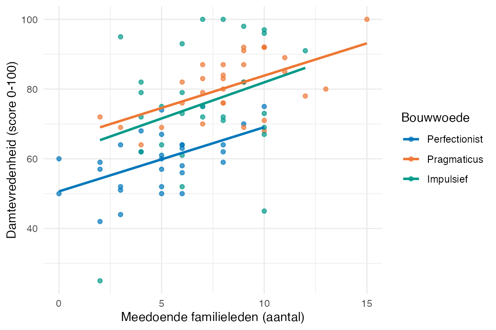
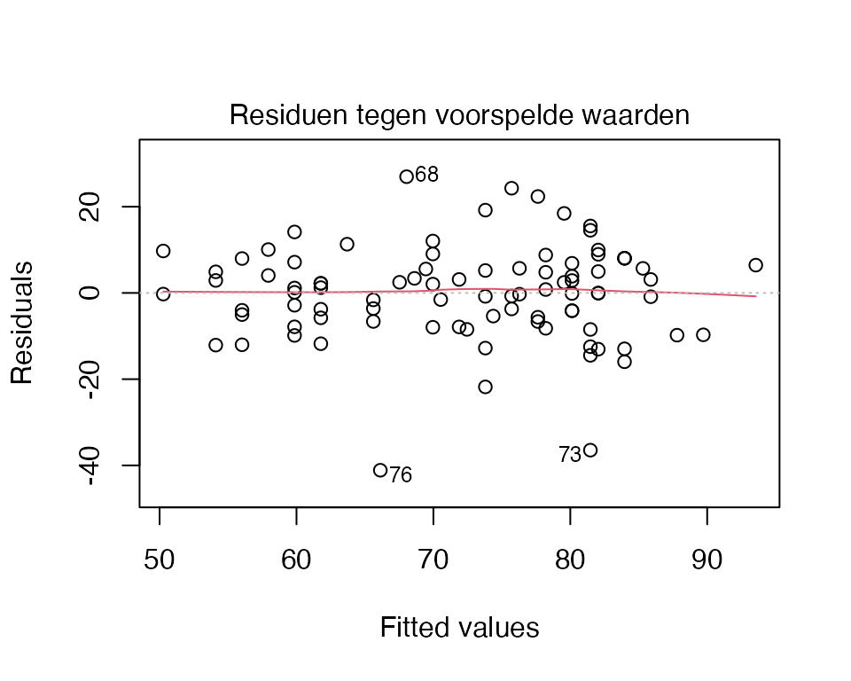
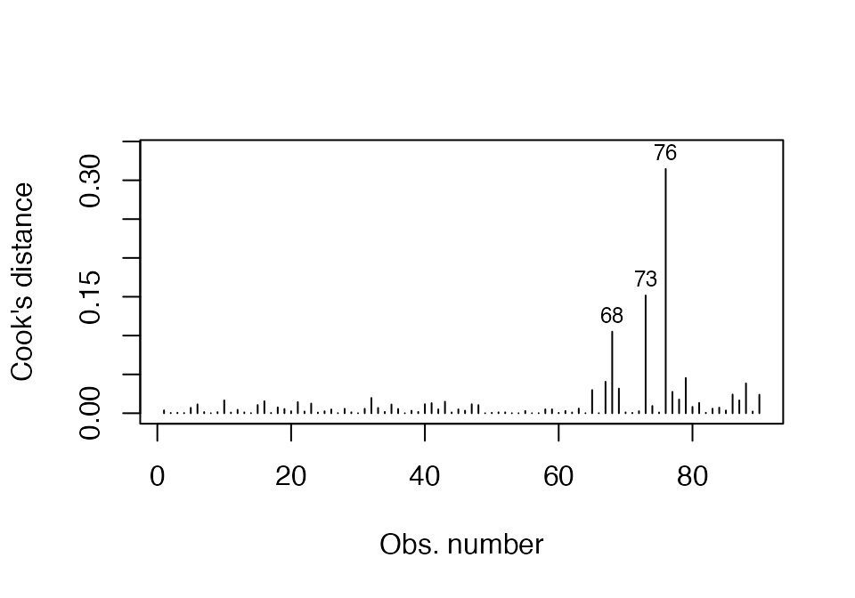
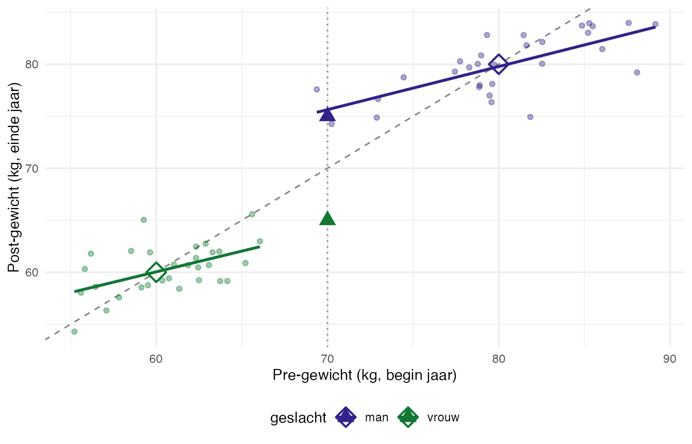
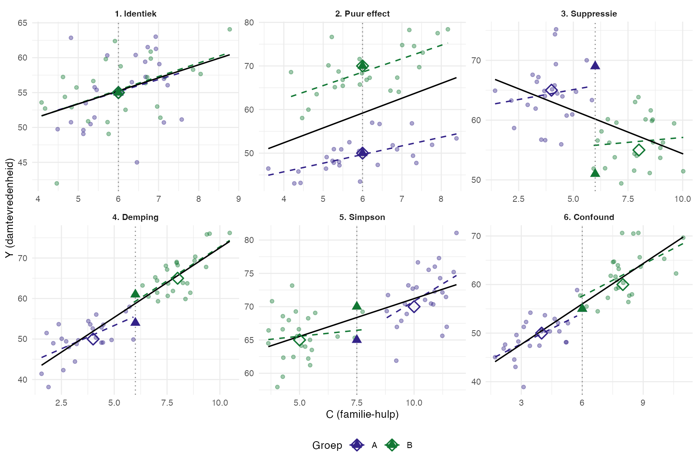

De bever zat aan de bosrand, een schrift open op zijn knieën, en keek peinzend de heuvel af. Negentig dammen had hij in beeld, negentig verschillende bevers — elk hun eigen werkstuk, elk hun eigen verhaal eronder. “Klaar,” mompelde een bever in de verte tegen niemand in het bijzonder. “Tevreden? Dat is een ándere vraag.”
Sommige bevers (zo wist hij van horen knagen) waren perfectionist: alles moest klopjes-precies, en zelfs dan was er bijna altijd iets dat knaagde. Andere werkten als pragmaticus: goed-genoeg-is-goed, een gerust streepje eronder. En sommigen, zelden maar onmiskenbaar, gingen impulsief te werk — een paar van die dammen waren hun trots, andere hun diepste ergernis. Bij elke bever noteerde hij óók hoeveel familieleden er tijdens het bouwen hadden meegeholpen.
“Want,” zei hij tegen niemand in het bijzonder, “tevredenheid is geen losse score. Ze hangt er ook vanaf hoeveel hulp je kreeg. Als de hele familie meebouwt, is het sowieso prettiger werk dan in je eentje. Onthoud dat.”
De bever wilde dus iets weten dat de mol nog niet had hoeven weten: het effect van een categorische factor (bouwwoede), gecorrigeerd voor een continue voorspeller (meedoende_familie). Niet apart toetsen, maar samen — in één model. Wat hij berekent heet analysis of covarianceANCOVA.
Bij ANCOVA stel je dezelfde drie vragen aan je gegevens als bij ANOVA, maar één vraag krijgt een tweekoppige draai:
Voorspelt het samen iets? — de \(F\)-toets op het hele model, met covariaat én factor.
Wie draagt bij — de covariaat, de factor, of beide? — twee aparte \(F\)-toetsen, een voor elk effect, en bij significantie van de factor: paarsgewijze vergelijking van de adjusted meansestimated marginal means / EMM tussen niveaus.
Klopt het allemaal wel? — de aannames van ANOVA (normaliteit, homoscedasticiteit) plus de twee specifieke aan ANCOVA: lineariteit van de covariaat-Y-relatie en homogeniteit van regressiehellingenhomogeneity of regression slopes — kortweg parallellismeparallelism: de slopes van Y op de covariaat horen ongeveer gelijk te zijn over groepen.
NoteA. Wat is ANCOVA?
ANCOVA combineert ANOVA en regressie. Je hebt één factor (categorisch, zoals ANOVA), één covariaatcovariate (continu, zoals MRA), en één afhankelijke variabele \(Y\). Twee doelen tegelijk: (1) foutreductie — de covariaat trekt een deel van de Y-variantie weg, het residu wordt kleiner, en de \(F\)-toets op de factor krachtiger. (2) Bias-correctie — als groepen op de covariaat van elkaar verschillen, corrigeer je daarvoor zodat het pure factor-effect overblijft.
NoteB. Adjusted means versus raw means
Bij ANCOVA verschuift je interpretatie van “wat is het gemiddelde Y per groep?” naar “wat zou het gemiddelde Y per groep zijn als alle groepen dezelfde covariaat-waarde hadden?”. Die geconditioneerde gemiddelden heten adjusted means of estimated marginal means (EMM):
waar \(b_w\) de pooled-within slopepooled-within slope is — de gemiddelde regressie-helling van Y op de covariaat, binnen elke groep. ANCOVA toetst altijd de adjusted means, niet de raw means.
NoteC. Centreren — techniek met een naam
In de ANCOVA-formule trek je de grand mean van de covariaat \(\bar{C}\) af van de groeps-covariaat-mean \(\bar{C}_j\). Dat is centreren — een gangbare regressie-techniek waarbij je de covariaat verschuift zodat zijn gemiddelde nul is.
Twee voordelen:
Interpretatie van het intercept — \(b_0\) wordt direct het gemiddelde van Y bij de gemiddelde covariaat-waarde, in plaats van bij covariaat = 0 (wat vaak buiten de data valt).
Multicollineariteit-reductie bij interactie-modellen (\(X_1 \cdot X_2\)) of polynomen (\(X^2\)).
In thema 1 (MRA) hebben we centreren niet expliciet gezien; in deze ANCOVA-context komt het impliciet voor in de adjusted-means-formule. Goed om de techniek bij naam te kennen — je komt ’m tegen in elk modern statistiek-handboek.
NoteHoe dit hoofdstuk leest
Dit hoofdstuk volgt dezelfde drie-laagse structuur als thema 1 en 2:
Verhaal-frame — wat de bever doet of denkt.
Algemene vorm — abstract, statistiek-Latijn met Y, factor, covariaat, mijn_data.
Voor onze dieren — uitvoerend, met # hekjes en concrete namen.
Plus de antwoorden in zacht groen (collapse), vragen in indigo, leesregels in mauve, alarm in oranje, don’ts in rood. T-vragen vlechten zich tussen de hoofdvragen door om je rekenintuïtie te oefenen.
Werkmaterialen — R-pakketten en functies
Wat de bever uit zijn gereedschapskist pakt
Gereedschap
Waar het voor is
Pakket
lm()
Lineair model — voor zowel ANOVA, ANCOVA als regressie
base
Anova(model, type = 3)
ANCOVA-tabel met type III sums of squares
car
etaSquared()
Effectgrootte \(\eta^2\) en \(\eta^2_p\)
lsr
emmeans(model, ~ factor)
Adjusted means (EMM) per niveau
emmeans
pairs(emm, adjust = "tukey")
Paarsgewijze vergelijking adjusted means
emmeans
leveneTest()
Toets voor gelijke varianties
car
cooks.distance()
Diagnostische waarde per observatie
base
apa_ancova_table()
Adjusted-means-tabel (zie functions/)
eigen
NoteWaarom Type III in ANCOVA?
Type III sums of squares geven elke term zijn unieke bijdrage na correctie voor de andere termen. Dat is precies wat je wilt: de factor toetsen ná aftrek van de covariaat (en omgekeerd). Bij Type I (sequentieel) zou de volgorde in de formule het resultaat veranderen; bij Type III niet. De regel options(contrasts = c("contr.sum", "contr.poly")) bovenaan zorgt dat Anova(., type = 3) de juiste antwoorden geeft.
NoteTechnisch detail: contr.sum voor Type-III SS
Onze setup zet options(contrasts = c("contr.sum", "contr.poly")). Dit is een technische voorwaarde voor car::Anova(., type = 3) om correcte hoofdeffecten te berekenen bij ongebalanceerde designs. Met R’s default contr.treatment zou Anova(type = 3) foutieve hoofdeffect-getallen geven. Voor de inhoudelijke interpretatie maakt het niets uit — de F-toetsen, p-waarden, \(\eta^2_p\) en EMM zijn identiek tussen contr.sum en contr.treatment; alleen de coëfficiënten in summary(lm) worden anders gecodeerd. Onthoud: zet deze regel altijd boven aan je script bij Type-III ANOVA / ANCOVA.
NoteHoe lees je contr.sum-coefficienten in summary(lm)?
In thema 1 (MRA, slot-sectie 1.B) zag je dummy-codering in zijn basisvorm — R’s default contr.treatment, met één groep als referentie (de \(0/0\)-rij) en de andere groepen als \(0/1\)-dummies die het verschil vanaf die referentie meten. In ANCOVA gebruiken we een variant op die codering: contr.sum, ook wel sum-to-zero coding. Geen drama — de adjusted means uit emmeans() blijven identiek aan wat je onder contr.treatment zou krijgen, en wat je inhoudelijk afleest is hetzelfde. Maar de getallen in summary(m_ancova) zien er anders uit, en dat moet je herkennen anders gaat de hand-rekening mis.
De twist. Bij contr.sum krijgt de “extra” groep (die in contr.treatment de \(0/0\)-referentie was) een \(-1/-1\)-rij in plaats van \(0/0\). Dat zorgt ervoor dat de drie groep-deviaties netjes samen optellen tot nul — handig voor Anova(., type = 3) bij ongebalanceerde designs. Stel we kiezen pragmaticus als \(d_1\) en impulsief als \(d_2\) — dan wordt perfectionist de derde rij (geen referentie meer in de treatment-zin, wel impliciet via \(-(d_1 + d_2)\)):
\(d_1\)
\(d_2\)
pragmaticus
1
0
impulsief
0
1
perfectionist
\(-1\)
\(-1\)
R noemt de kolommen bouwwoede1 en bouwwoede2. Perfectionist krijgt geen eigen kolom — die wordt afgeleid via \(-(d_1 + d_2)\).
De regressievergelijking heeft formeel dezelfde vorm als in MRA-slot:
Maar de interpretatie van \(b_0\), \(b_1\) en \(b_2\) kantelt — en juist daar zit waarom je contr.sum-output niet kunt lezen alsof het contr.treatment is:
(Intercept) (\(b_0\)) — niet de adjusted mean van een referentiegroep (zoals in MRA-slot bij contr.treatment), maar het grand-mean-niveau over de drie groepen bij \(C = 0\).
bouwwoede1 (\(b_1\)) — deviatie van pragmaticus t.o.v. dat grand-mean-niveau (geen verschil-met-referentie meer).
bouwwoede2 (\(b_2\)) — deviatie van impulsief t.o.v. dat grand-mean-niveau.
De derde groep (perfectionist) heeft geen eigen parameter; haar deviatie is \(-(b_1 + b_2)\).
Het codeer-lekker-zelf-advies uit MRA-slot 1.B geldt hier nog steeds: zet je factor-levels expliciet met factor(..., levels = c(...)) vóór je het model fit, anders ordent R ze alfabetisch en weet je niet zeker welke groep welke kolom krijgt. Dat geldt voor contr.treatment én contr.sum — alleen de betekenis van de coefficienten verschilt, niet de noodzaak om zelf de volgorde te kiezen.
Adjusted means herrekenen uit deze coefficienten — bij grand mean covariaat \(\bar{C}\):
Minisommetje — fictieve getallen. Stel summary(m_ancova) rapporteert (let op: deze cijfers zijn verzonnen om de mechaniek te zien — niet de echte bever-output):
(Intercept) = \(65\)
bouwwoede1 = \(+3\)
bouwwoede2 = \(+5\)
meedoende_familie (\(b_w\)) = \(1.5\)
Plus: grand mean covariaat \(\bar{C} = 4\). Perfectionist-deviatie staat niet in de output — die leid je zelf af:
Check — som van de drie deviaties: \(3 + 5 + (-8) = 0\) (kenmerk van contr.sum). Ongewogen gemiddelde adjusted means: \((74 + 76 + 63)/3 = 71\) = \(b_0 + b_w \cdot \bar{C} = 65 + 6\). Klopt — dáár staat het grand-mean-niveau in (Intercept) voor, na correctie voor de covariaat-effect tot grand mean.
Als je dezelfde drie adjusted means uit emmeans(m_ancova, ~ bouwwoede) zou krijgen — en dat doe je — dan is de uitleg compleet. Als ze niet matchen, las je summary() als contr.treatment terwijl contr.sum aanstaat. Klassieke val: emmeans() doet niks raars, jij las de coefficienten verkeerd.
NoteVoor wie chemisch wil denken — AN-mono-COVA, AN-bi-COVA, …
Geen tentamenstof, niet officiële terminologie — wel een geheugenanker.
Een ANCOVA met één factor + één covariaat zou je chemisch kunnen noemen: AN-mono-COVA (één covariaat = mono).
AN-mono-COVA — \(1\) factor \(+ 1\) covariaat (de standaard-ANCOVA in dit thema).
AN-bi-COVA — \(1\) factor \(+ 2\) covariaten.
AN-tri-COVA — \(1\) factor \(+ 3\) covariaten.
(M)AN-poly-COVA — meer factoren én meer covariaten; opgeschaald naar (M)ANCOVA in thema 5.
De “mono” / “bi” / “tri” telt het aantal covariaten. Geen literatuur zal je dit ooit zo zien noemen — maar voor het zelf-onthouden van wat ANCOVA structureel doet (factor mét covariaat) is het een aardige denkframe. Wie de structuur van een vraag herkent, weet meteen welke functie-aanroep daarbij hoort.
Notatie — symbolen voor ANCOVA
NoteSleutelsymbolen in dit hoofdstuk
In dit werkboek zie je telkens dezelfde notatie:
\(\bar{Y}_j\) — raw steekproef-gemiddelde van \(Y\) in groep \(j\) (gewoon mean() op de Y-waarden in die groep).
\(\bar{C}_j\) — gemiddelde van de covariaat \(C\) in groep \(j\).
\(\bar{C}\) — grand mean van de covariaat over alle observaties.
\(\bar{Y}_j^*\) — adjusted meanEMM: het gemiddelde van Y in groep \(j\) na correctie voor de covariaat, alsof iedereen dezelfde covariaat-waarde \(\bar{C}\) had: \[\bar{Y}_j^* = \bar{Y}_j - b_w (\bar{C}_j - \bar{C}).\]
\(b_w\) — pooled-within regressie-slope. Niet de gewone OLS-slope op alle data, maar het gewogen gemiddelde van de slopes binnen elke groep. Past bij de ANCOVA-aanname dat die binnen-groep-slopes gelijk zijn (parallellisme).
\(F\), \(df\) — toetsstatistiek en vrijheidsgraden voor zowel covariaat als factor.
\(\eta^2_p\)partial eta-squared — effectgrootte, proportie variantie die het effect verklaart na aftrek van de andere termen in het model.
Voor inferentie praat je over de populatie-waarden (\(\mu_j\) en de populatie-versie van de slope, \(\beta^*\)); voor rapportage over de steekproef (\(\bar{Y}_j\), \(\bar{Y}_j^*\), \(b_w\), \(M\), \(SD\)).
TipVuistregels zijn afspraken, geen wetten
De drempels in dit werkboek zijn breed gangbare conventies — niet universeel:
parallellisme-aanname: de interactie tussen factor en covariaat moet niet significant zijn (\(p > .05\)). Bij grote samples is “niet significant” zwakker bewijs voor gelijkheid; check ook visueel of de slopes per groep ongeveer parallel lopen;
lineariteit covariaat-Y: per groep zou de relatie ongeveer recht moeten zijn — check met een scatter Y vs \(C\) per groep;
geen meetfout in de covariaat: ANCOVA neemt aan dat \(C\) zonder ruis gemeten is; bij sterke meetfout wordt \(b_w\) onderschat (regression-attenuation) en de bias-correctie onbetrouwbaar (zie T8);
Verschillende vakgroepen, docenten en handboeken kiezen iets andere getallen. Als je voor een tentamen of opdracht werkt, check altijd in je eigen college-sheets welke drempels je docent of vakgroep hanteert. Wij volgen hier consistent één set, maar dat is een keuze, geen natuurwet.
NoteCode in dit hoofdstuk — wat moet je kunnen typen?
Code is standaard open als je hem moet kunnen typen op het R-practical-tentamen: lm(), Anova(., type = 3), emmeans(), pairs(), leveneTest(), etaSquared(), en de parallellisme-check lm(Y ~ covariaat * factor). Code die alleen ter illustratie dient — verkenning, plot-decoratie, Venn-diagrammen — staat ingeklapt met een knopje “Toon code”. Klap hem open als je nieuwsgierig bent; voor het tentamen hoef je hem niet te reproduceren.
3.0 Project- en datavoorbereiding
De bever houdt zijn aantekeningen netjes
Open de meegestuurde projectmap (03_covariantieanalyse/) en dubbelklik op 03_covariantieanalyse.Rproj. Daarmee staat je werkomgeving klaar: paden kloppen, RStudio kent de juiste werkmap. De data ligt al in data/, de helper-functies in functions/. Niets te installeren als de vier pakketten (car, lsr, emmeans, tidyverse) op je computer staan; anders één keer:
Per bever drie waarden: bouwwoede (perfectionist/pragmaticus/impulsief), meedoende_familie (aantal familieleden, \(0\)-\(15\)) en damtevredenheid (score \(0\)-\(100\)). bouwwoede is een factor; meedoende_familie en damtevredenheid zijn numeric.
3.1 Het ANCOVA-model fitten en interpreteren
De bever vergelijkt drie werkstijlen, gegeven de hoeveelheid familie-hulp
“Als ik alleen de drie werkstijlen vergelijk,” zei de bever, “dan vergeet ik dat de pragmatici toevallig vaker hulp van familie kregen. Niet eerlijk. Ik moet het gecorrigeerd voor meedoende familie zien.”
NoteVoor je gaat rekenen — vijf vragen aan jezelf
Het stappenplan, opnieuw, met de techniek-keuze als laatste stap.
Wie of wat wordt er gemeten?\(90\) verschillende bevers, elk met één eigen dam.
Wat wordt er gemeten?Drie variabelen per bever: bouwwoede, meedoende_familie, damtevredenheid.
Onafhankelijk of afhankelijk?Onderzoeksvraag: voorspelt bouwwoede de damtevredenheid, gecorrigeerd voor meedoende_familie? Dan is damtevredenheid afhankelijk (\(Y\)), bouwwoede de hoofd-onafhankelijke (factor), en meedoende_familie de covariaat (\(C\)) waarvoor we corrigeren.
Meetniveau van elke variabele?damtevredenheid interval, meedoende_familie interval, bouwwoede nominaal (3 niveaus).
Welke techniek? Doorloop de beslisboom:
flowchart TD
A[Hoeveel afhankelijke<br/>variabelen?] -->|één| B[Y meetniveau?]
A -->|meerdere| Z[MANOVA<br/><i>thema 5</i>]
B -->|interval| C[X-en meetniveau?]
B -->|binair| D[Logistic regression<br/><i>thema 4</i>]
C -->|alleen interval| E[Multiple regression<br/><i>thema 1</i>]
C -->|alleen nominaal| F[ANOVA<br/><i>thema 2</i>]
C -->|gemengd| G[ANCOVA<br/><i>dit thema</i>]
style G fill:#faf3e2,stroke:#c9a05a,stroke-width:2px
NoteBens pijltjes-overzicht — alle MVDA-technieken in één tabel
Dezelfde keuze, anders genoteerd. Lees als predictor(en) (meetniveau) → DV(s) (meetniveau):
#
Predictor(en)
DV(s)
Techniek
dich |X|
|Y| int
\(t\)-toets
nom 3+lvl |X|
|Y| int
éénweg ANOVA
1
int |X X …|
|Y| int
MRA — thema 1
2
nom |X X|
|Y| int
factorial ANOVA — thema 2
3
nom + int |X C|
|Y| int
ANCOVA — thema 3
4
bo(in) |X|
|Y| bin
LRA — thema 4
5
nom |X|
|Y₁ Y₂ …| int
MANOVA — thema 5
6
within-subject momenten
|Y₁ Y₂ Y₃ Y₄| int
RMA — thema 6
7
indirect via \(M\)
\(X \to M \to Y\) pad
Mediation — thema 7
\(Y\) is interval (damtevredenheid), \(X\)-en zijn gemengd (covariaat meedoende_familie is interval, factor bouwwoede is nominaal). Antwoord: ANCOVA.
T1 — Techniek-keuze: ANCOVA, ANOVA, MRA of factorial ANOVA?
NoteVraag T1 — Pen-en-papier
Voor elk vignet: bepaal afhankelijke variabele, meetniveau van elke voorspeller, en kies dan de techniek.
a)Een vleermuis vergelijkt drie jachtgebieden (open / dicht / boven water) op vangstsucces (aantal insecten/uur). Bij elke vlucht meet hij óók de luchttemperatuur (in graden Celsius). Hij wil weten of het jachtgebied uitmaakt na correctie voor temperatuur.
b)Een mus vergelijkt drie nest-types (boom / dakgoot / klimop) op kuikenoverleving (aantal jongen dat uitvliegt). Geen continue covariaten in zijn dataset.
c)Een arbeidspsycholoog meet bij \(90\) medewerkers de werkprestatie (KPI-score, schaal \(0\)–\(100\)). Voorspellers: aantal jaren ervaring, aantal trainingen gevolgd en zelf-gerapporteerde motivatie — allemaal continu.
d)Een onderwijskundige vergelijkt drie didactische methoden (frontaal / probleemgestuurd / blended) en twee niveaus (HBO / WO) op tentamen-cijfer. Bij \(200\) studenten, geen continue covariaat.
CautionAntwoord T1 — open na je eigen poging
a)\(Y\) = vangstsucces (INT), één factor (jachtgebied, NOM, 3 niveaus) + één continue covariaat (temperatuur, INT). \(\Rightarrow\)ANCOVA.
c)\(Y\) = werkprestatie (INT), drie continue voorspellers (ervaring, trainingen, motivatie). Geen factor. \(\Rightarrow\)multiple regressie-analyse (thema 1).
d)\(Y\) = tentamen-cijfer (INT), twee factoren (didactische methode 3 niveaus, niveau 2 niveaus), geen continue covariaat. \(\Rightarrow\)factorial / tweeweg-ANOVA (thema 2).
Vuistregel. Eén \(Y\) + één factor + één continue covariaat = ANCOVA. Verwissel niet met factorial ANOVA: daar zijn beide voorspellers nominaal.
T2 — Centreren als techniek-met-naam
NoteVraag T2 — Pen-en-papier
Centrerencentering / mean-centering is een veelgebruikte regressie-techniek waarbij je een continue voorspeller verschuift zodat zijn gemiddelde nul wordt: \(C^c_i = C_i - \bar{C}\).
a) Wat verandert er aan het intercept\(b_0\) van een regressiemodel als je de covariaat centreert? Waarom is dat handig voor interpretatie?
b) In de ANCOVA-formule voor adjusted means \(\bar{Y}_j^* = \bar{Y}_j - b_w(\bar{C}_j - \bar{C})\) zit centreren impliciet. Welk deel van de formule is dat?
c) Bij interactie-modellen (\(X_1 \cdot X_2\)) of polynomen (\(X^2\)) helpt centreren tegen multicollineariteit. Waarom? (Hint: hoe sterk correleert ongecentreerd \(X\) met \(X^2\)?)
CautionAntwoord T2 — open na je eigen poging
a) Zonder centreren is \(b_0\) de voorspelde Y-waarde wanneer de covariaat = 0. Bij veel covariaten valt 0 buiten de data (een tak van 0 cm bestaat niet als steiger), dus \(b_0\) is moeilijk te interpreteren. Met centreren is \(b_0\) de voorspelde Y-waarde bij de gemiddelde covariaat-waarde — meestal midden in de data, dus inhoudelijk uit te leggen.
b) Het deel \((\bar{C}_j - \bar{C})\) is precies de gecentreerde groeps-covariaat-mean. Je vraagt: hoeveel ligt deze groep boven of onder het overall covariaat-gemiddelde? En je trekt \(b_w\) keer dat verschil van het raw groepsgemiddelde af.
c) Een ongecentreerde \(X\) correleert sterk met \(X^2\) (bv. bij \(X \in [3, 12]\) is de correlatie zo \(.97\)). Dat geeft hoge VIF-waarden en onstabiele coëfficiënten. Een gecentreerde \(X^c\) correleert veel zwakker met \((X^c)^2\) (bij symmetrische verdeling: nul). Dezelfde logica geldt bij interactie-termen: \(X_1 \cdot X_2\) correleert sterk met \(X_1\) en \(X_2\) als die ongecentreerd zijn.
Inzicht. Centreren verandert de schatting van \(b_0\) (en alleen die), de F-toetsen op de andere termen niet. Voor ANCOVA is centreren een didactische lens — het helpt je begrijpen waarom adjusted means zijn wat ze zijn — meer dan een verplichte stap.
3.1.a Verkenning — scatter Y vs covariaat per groep
Voordat de bever toetst, kijkt hij eerst.
Algemene vorm.
table(mijn_data$factor)aggregate(Y ~ factor, data = mijn_data, FUN = mean)aggregate(C ~ factor, data = mijn_data, FUN = mean)# Scatter Y vs C, gekleurd per niveau van de factor.ggplot(mijn_data, aes(x = C, y = Y, colour = factor)) +geom_point() +geom_smooth(method ="lm", se =FALSE)
Voor onze dieren.
# Aantallen per bouwwoede.table(bever_tevredenheid$bouwwoede)
perfectionist pragmaticus impulsief
30 32 28
# Raw groepsgemiddelden van de afhankelijke en de covariaat.aggregate(damtevredenheid ~ bouwwoede, data = bever_tevredenheid, FUN = mean)
# Tijdelijke factor met hoofdletter-niveaus voor leesbare legend..stijl_lbl <-factor(tools::toTitleCase(as.character(bever_tevredenheid$bouwwoede)),levels = tools::toTitleCase(levels(bever_tevredenheid$bouwwoede)))ggplot(bever_tevredenheid,aes(x = meedoende_familie, y = damtevredenheid, colour = .stijl_lbl)) +geom_point(alpha =0.7) +geom_smooth(method ="lm", se =FALSE) +scale_colour_manual(values =c("#0077BB", "#EE7733", "#009988")) +labs(x ="Meedoende familieleden (aantal)",y ="Damtevredenheid (score 0-100)",colour ="Bouwwoede") +theme_minimal(base_size =11)
`geom_smooth()` using formula = 'y ~ x'

NoteVragen 3.1
a) Hoeveel dammen per werkstijl? Gebalanceerd?
b) Wat zijn de raw groepsgemiddelden voor damtevredenheid? In welke richting wijst het ruwe verschil?
c) Wat zijn de groeps-covariaat-means? Verschillen ze opvallend?
d) Lopen de regressielijnen in de scatter ongeveer parallel? Wat zegt dat?
CautionAntwoord 3.1 — open na je eigen poging
In gewone woorden.
Per werkstijl \(30\), \(32\) en \(28\) dammen — lichtelijk ongebalanceerd (\(n_{\max}/n_{\min} = 32/28 \approx 1.14\), ruim binnen de \(1.5\)-robuustheidsgrens), in de praktijk fijn.
Raw means: perfectionist \(M = 59.67\), pragmaticus \(M = 80.84\), impulsief \(M = 75.71\) — pragmatici zijn het tevredenst, perfectionisten het minst.
Covariaat-means: \(\bar{C}_{\text{perfectionist}} = 4.90\), \(\bar{C}_{\text{pragmaticus}} = 8.38\), \(\bar{C}_{\text{impulsief}} = 7.00\) — perfectionisten kregen systematisch minder familie-hulp dan de andere twee (familie haakt af, of perfectionist wil het zelf doen). Een deel van het ruwe tevredenheids-verschil zou dus ook door familie-hulp kunnen komen, niet door werkstijl. Daar gaat ANCOVA over.
De drie regressielijnen lopen ongeveer parallel — dat is een visuele eerste check op de parallellisme-aanname. We toetsen hem in 3.2.
APA-stijl.
Per werkstijl werden ongeveer \(30\) dammen gemeten (\(n_{\text{perfectionist}} = 30\), \(n_{\text{pragmaticus}} = 32\), \(n_{\text{impulsief}} = 28\)). De raw tevredenheid was het hoogst bij pragmatici (\(M = 80.84\)), gevolgd door impulsieven (\(M = 75.71\)) en perfectionisten (\(M = 59.67\)). De groepen verschilden in gemiddelde familie-hulp (perfectionist \(M = 4.90\); pragmaticus \(M = 8.38\); impulsief \(M = 7.00\)), wat illustreert waarom ANCOVA-correctie hier zinvol is.
3.1.a-bis Systematische bias op de covariaat — toetsen vóór ANCOVA
Visueel zagen we al dat de perfectionisten gemiddeld minder familie-hulp kregen dan de andere werkstijlen. Voor ANCOVA is dat een load-bearing observatie: alleen als er systematisch verschil zit in de covariaat over de factor-niveaus, dóét de ANCOVA-correctie iets noemenswaardigs. Toets het expliciet — niet via oogwerk alleen.
NoteWaarom toetsen vóór ANCOVA?
Drie scenario’s:
Geen bias (\(\bar{C}\) gelijk over groepen): ANCOVA-resultaat ≈ ANOVA-resultaat. De covariaat doet weinig groeps-relevant werk; je gebruikt ’m dan vooral voor foutreductie.
Wel bias (groepen verschillen in \(\bar{C}\)): ANCOVA en ANOVA kunnen tot andere conclusies komen. Dat is de situatie waarvoor ANCOVA ontworpen is.
Te grote bias (groepen overlappen nauwelijks in \(C\)): adjusted means liggen ver buiten het waarneembare bereik per groep — extrapolatie. Wantrouw de uitkomst.
Helder maken in welk scenario je zit, voordat je de ANCOVA draait — dan weet je wat je verwacht en kun je achteraf herkennen of de uitkomst klopt.
Algemene vorm.
# Eenweg-ANOVA van de covariaat op de factor.lm_cov <-lm(C ~ factor, data = mijn_data)Anova(lm_cov, type =3)# Pairwise vergelijkingen tussen factor-niveaus op de covariaat.emmeans(lm_cov, pairwise ~ factor, adjust ="tukey")
Voor onze dieren.
# Stap 1: eenweg-ANOVA van meedoende_familie op bouwwoede.lm_cov_bias <-lm(meedoende_familie ~ bouwwoede, data = bever_tevredenheid)Anova(lm_cov_bias, type =3)
# Stap 2: pairwise via emmeans om te zien tussen welke werkstijlen het verschil zit.emmeans(lm_cov_bias, pairwise ~ bouwwoede, adjust ="tukey")$contrasts
contrast estimate SE df t.ratio p.value
perfectionist - pragmaticus -3.48 0.656 87 -5.295 <0.0001
perfectionist - impulsief -2.10 0.679 87 -3.095 0.0074
pragmaticus - impulsief 1.38 0.668 87 2.058 0.1048
P value adjustment: tukey method for comparing a family of 3 estimates
NoteVragen 3.1.a-bis
a) Is de eenweg-ANOVA op meedoende_familie ~ bouwwoede significant? Welk \(F\), welk \(p\)?
b) Welke werkstijlen verschillen pairwise in de hoeveelheid familie-hulp die ze krijgen?
c) Welk scenario uit de callout hierboven past hier (geen bias / wel bias / te grote bias)?
d) Wat verwacht je dat ANCOVA met de tevredenheids-rangorde gaat doen — versterken, afzwakken, of omkeren ten opzichte van de raw means? Beargumenteer.
CautionAntwoord 3.1.a-bis — open na je eigen poging
a) De ANOVA op meedoende_familie ~ bouwwoede is significant (\(F(2, 87) \approx 23\), \(p < .001\) — exacte getallen in de output hierboven) — er is wel systematische bias op de covariaat.
b) Pragmatici krijgen significant meer familie-hulp dan perfectionisten; impulsieven zitten ertussenin (significant verschil met perfectionist, niet met pragmaticus). Het verschil zit dus vooral bij perfectionisten — die werken meer alleen.
c)Wel bias — een serieus mean-verschil in \(C\) over de groepen, maar de groepen overlappen nog steeds in waarneembaar bereik. Dit is de situatie waarvoor ANCOVA bedoeld is.
d) Verwachting: ANCOVA gaat het ruwe tevredenheids-verschil tussen perfectionisten en de andere twee afzwakken. Een deel van het ruwe verschil komt namelijk niet door werkstijl maar door minder familie-hulp — en familie-hulp helpt de tevredenheid. De adjusted means corrigeren daarvoor: ze laten zien wat de tevredenheid per werkstijl zou zijn als alle drie de groepen evenveel familie-hulp hadden gehad.
Inzicht. Deze toets-vooraf is wat onderscheid maakt tussen “we draaien ANCOVA omdat het hoort” en “we draaien ANCOVA omdat we weten waarom”. Bij geen bias is ANCOVA-correctie cosmetisch. Bij wel bias verandert het verhaal. Bij te grote bias kun je de uitkomst niet meer vertrouwen.
3.1.b Aannamechecks — kort
ANCOVA leunt op vier aannames:
Normaal verdeelde residuen binnen elke groep (bij grote \(n\) minder kritisch);
Gelijke variantieshomogeneity of variance — Levene;
Lineariteit van de covariaat-Y-relatie binnen elke groep — visueel via de scatter;
Parallellisme — de slopes binnen elke groep zijn gelijk. Apart getoetst in 3.2.
Algemene vorm.
leveneTest(Y ~ factor, data = mijn_data)plot(lm(Y ~ C + factor, data = mijn_data), which =1)
Voor onze dieren.
# Levene op de factor-groepen.leveneTest(damtevredenheid ~ bouwwoede, data = bever_tevredenheid)
Levene's Test for Homogeneity of Variance (center = median)
Df F value Pr(>F)
group 2 5.9785 0.003691 **
87
---
Signif. codes: 0 '***' 0.001 '**' 0.01 '*' 0.05 '.' 0.1 ' ' 1
m_ancova <-lm(damtevredenheid ~ bouwwoede + meedoende_familie, data = bever_tevredenheid)plot(m_ancova, which =1, sub.caption ="",caption ="Residuen tegen voorspelde waarden")

plot(m_ancova, which =4, sub.caption ="",caption ="Cook's distance per observatie")

NoteVragen 3.1
e) Is de aanname van gelijke varianties houdbaar? Rapporteer Levene.
f) Wat zie je in de residual plot — een rustige horizontale band, of iets verdachts?
g) Eén observatie heeft een opvallend hoge Cook’s distance. Hoe ga je daarmee om in een rapportage? (Geen R-actie nodig: bedenk de keuze.)
CautionAntwoord 3.1 — open na je eigen poging
In gewone woorden.
Levene is hier wél significant (\(F(2, 87) = 5.98\), \(p = .004\)): de drie groepen verschillen in spreiding. Dat past bij de plagende observatie — impulsieven hebben een veel grotere \(SD\) (\(\approx 17.6\)) dan perfectionisten (\(\approx 8.4\)) of pragmatici (\(\approx 8.9\)); een paar impulsieven zijn extreem tevreden, een paar balen. De groepen zijn ongeveer even groot (\(n_{\max}/n_{\min} \approx 1.14\)), dus de \(F\)-toets blijft volgens de robuustheidsvuistregel verdedigbaar — maar in een rapportage meld je dit eerlijk en bespreek je de implicatie.
De residual plot toont een lichte trompet (grotere spreiding rechts) door de impulsieven; geen kromming, wel ongelijke variantie.
Eén observatie steekt boven de andere uit met een Cook’s distance rond \(0.32\) — niet alarmerend (vuistregel: \(> 0.5\) is reden tot inspectie, \(> 1\) tot zorg). Toch netjes: rapporteer dat je hem hebt opgemerkt, draai het model met-en-zonder die observatie, en vermeld of de conclusies veranderen. Niet doen: stilletjes weglaten zonder dat te melden.
APA-stijl.
Levene’s toets gaf een significant verschil in varianties tussen werkstijlen, \(F(2, 87) = 5.98\), \(p = .004\), voornamelijk doordat de impulsief-groep een veel grotere spreiding had (\(SD = 17.60\)) dan perfectionisten (\(SD = 8.44\)) en pragmatici (\(SD = 8.86\)). Omdat de groepen ongeveer even groot waren (\(n_{\max}/n_{\min} \approx 1.14\)), is \(F\) in deze configuratie nog robuust; we rapporteren de heteroscedasticiteit expliciet bij de bevindingen. De residual plot toonde een lichte trompetvorm in lijn hiermee. De maximale Cook’s distance was \(D \approx 0.32\).
NoteRobuustheid van \(F\) — wanneer mag je doorgaan
Voor ANCOVA gelden dezelfde robuustheidsregels als voor ANOVA — plus de extra parallellisme-aanname.
Normaliteit — \(F\) is robuust zolang \(n \geq 15\) in elke groep. Onder die grens helpt de centrale limietstelling onvoldoende.
Homoscedasticiteit — \(F\) is robuust zolang \(n_{\max}/n_{\min} \leq 1.5\). Echt probleem alleen als Levene \(p < .05\)én\(n_{\max}/n_{\min} \geq 1.5\). Dan: Brown-Forsythe of Welch-aanpak, of voor factorial-context de richtingsregel (grootste varianties in kleinste groepen \(\Rightarrow\)\(F\) liberaal; in grootste groepen \(\Rightarrow\)\(F\) conservatief).
Onafhankelijkheid — niet te redden met een correctie; designkeuze + repeated-measures (thema 6).
Parallellisme — extra aan ANCOVA. Apart getoetst in 3.2 via de interactie covariaat \(\times\) factor.
Vuistregel uit het Exercise Book (p. 42): “When your groups are large enough: don’t worry!” — voor ANCOVA: tenzij parallellisme is geschonden; dan praat je niet over correctie maar over een ander model (moderatie, zie 3.2.c).
3.1.c Het ANCOVA-model en de Type-III ANOVA-tabel
NoteVolgorde in de formule — factor eerst, of covariaat eerst?
Bij Type-III SS via Anova(., type = 3) maakt de volgorde voor de uiteindelijke \(F\)- en \(p\)-waarden geen verschil — Type III is invariant onder volgorde. Of je nu lm(Y ~ factor + covariaat) of lm(Y ~ covariaat + factor) schrijft, je krijgt dezelfde toets-statistieken. Wat afwijkt is alleen de Type-I (sequentiële) SS-uitsplitsing, en daar werken we hier sowieso niet mee.
De cursus-conventie schrijft consequent lm(Y ~ factor + covariaat) (factor eerst). Wij volgen dat hier — zo herken je je eigen output direct uit college-sheets en oefeningen. Bij Type-I SS zou de volgorde wél uitmaken; daarom blijft Anova(., type = 3) de juiste keuze.
Algemene vorm.
mijn_model <-lm(Y ~ factor + covariaat, data = mijn_data)# Contrasts zoals in de uni-oplossing (Type-III toetsen met sum-to-zero).# Defensief — voor het geval dat een eerder blok de instelling heeft veranderd.options(contrasts =c("contr.sum", "contr.poly"))Anova(mijn_model, type =3) # ANCOVA-tabel, type IIIetaSquared(mijn_model) # eta-squared en partial eta-squared
Voor onze dieren.
# Het ANCOVA-model: factor + covariaat (zonder interactie). cursus-conventie.m_ancova <-lm(damtevredenheid ~ bouwwoede + meedoende_familie, data = bever_tevredenheid)# Contrasts zoals in de uni-oplossing (Type-III toetsen met sum-to-zero).options(contrasts =c("contr.sum", "contr.poly"))Anova(m_ancova, type =3)
Voor onze bevers.\(I = 3\), \(N = 90\): \(df_C = 1\), \(df_F = 2\), \(df_w = 90 - 3 - 1 = 86\), \(df_{\text{tot}} = 89\). Check zo dadelijk in de Anova-output of de tweede df van elke \(F\)-toets inderdaad \(86\) is.
NoteVragen 3.1
h) Is de covariaat meedoende_familie significant? Rapporteer \(F\), \(df\), \(p\) en \(\eta^2_p\).
i) Is bouwwoede significant na correctie voor meedoende_familie? Rapporteer \(F\), \(df\), \(p\) en \(\eta^2_p\).
j) Vergelijk de effectgroottes: wie verklaart meer, de covariaat of de factor?
k) Klopt \(df_w\) met de hoofdreken-formule?
CautionAntwoord 3.1 — open na je eigen poging
In gewone woorden.
Meedoende_familie heeft een sterk significant effect: \(F(1, 86) = 17.11\), \(p < .001\), \(\eta^2_p = .166\) — een groot effect.
Bouwwoede is ook significant na correctie voor familie-hulp: \(F(2, 86) = 11.25\), \(p < .001\), \(\eta^2_p = .207\) — eveneens groot (vuistregel \(\geq .14\)).
De factor verklaart \(\sim 21\%\) van de unieke variantie, de covariaat \(\sim 17\%\) — werkstijl weegt iets zwaarder, en familie-hulp doet er duidelijk óók na correctie toe.
\(df_w = 86 = N - I - 1 = 90 - 3 - 1\), klopt.
APA-stijl.
Een ANCOVA met bouwwoede als factor en meedoende_familie als covariaat toonde een significant en groot effect van bouwwoede, \(F(2, 86) = 11.25\), \(p < .001\), \(\eta^2_p = .207\). Het effect van familie-hulp was eveneens significant en groot, \(F(1, 86) = 17.11\), \(p < .001\), \(\eta^2_p = .166\).
T3 — Adjusted means hand-bereken
NoteVraag T3 — Pen-en-papier
Adjusted means worden geschat met de formule: \[\bar{Y}_j^* = \bar{Y}_j - b_w (\bar{C}_j - \bar{C})\]
b) De perfectionist-groep krijgt de grootste opwaartse correctie (\(+3.63\)), omdat hun covariaat-mean het laagst was (minder familie-hulp — een handicap die je wegcorrigeert). Pragmaticus krijgt de grootste neerwaartse correctie (\(-3.05\)): hun covariaat-mean lag duidelijk boven gemiddeld (meer familie-hulp), dus je trekt af. Impulsief zat dicht bij het overall covariaat-gemiddelde; vrijwel geen correctie. Dat past bij wat je van ANCOVA verwacht: groepen met betere covariaat-startpositie krijgen een correctie omlaag.
c) De raw means lopen \(59.67 \to 80.84\) (range \(\approx 21.2\)). De adjusted means \(63.30 \to 77.79\) (range \(\approx 14.5\)). De groepen liggen na correctie dichter bij elkaar — een deel van het ruwe verschil zat in de covariaat (familie-hulp), niet in werkstijl.
Inzicht. ANCOVA “egaliseert” niet altijd; soms maakt hij verschillen groter (als groepen in tegengestelde richting verschillen op de covariaat). Hier kleiner, maar nog steeds substantieel — perfectionisten zijn ook na correctie minder tevreden dan pragmatici.
T4 — \(b_w\) pooled-within: wat is gepooled?
NoteVraag T4 — Pen-en-papier
In de ANCOVA-formule staat \(b_w\), de pooled-within slope.
a) Wat betekent “pooled-within” letterlijk? Welke slopes worden gepooled?
b) Hoe verschilt \(b_w\) van de gewone OLS-slope \(b_{\text{totaal}}\) die je krijgt als je lm(Y ~ C) doet zonder factor? (Hint: bij verschillende groeps-Y-means kunnen ze flink verschillen.)
c) Onder welke aanname is \(b_w\) een zinvolle parameter? Wat als die aanname niet houdt?
CautionAntwoord T4 — open na je eigen poging
a) “Pooled-within” = gewogen gemiddelde van de regressie-slopes binnen elke groep. Per groep \(j\) heb je een slope \(b_j\) (de slope van Y op C als je alleen die groep bekijkt). \(b_w\) is daar het pooled (gewogen) gemiddelde van.
b)\(b_{\text{totaal}}\) uit lm(Y ~ C) zonder factor mengt twee bronnen: (1) de echte binnen-groep-relatie van C op Y, en (2) het feit dat groepen zowel op C als op Y verschillen (cross-group-variatie). Als groepen met hogere \(\bar{C}\) ook hogere \(\bar{Y}\) hebben omdat de groep beter is (niet alleen omdat C ze omhoog trekt), wordt \(b_{\text{totaal}}\) opgepompt. \(b_w\) kijkt door de groepen heen en negeert die between-group-trend — vandaar dat het de juiste parameter is voor adjusted means.
c) Onder de parallellisme-aanname: alle binnen-groep-slopes zijn (in de populatie) gelijk. Dan bestaat \(b_w\) als één getal en heeft hij betekenis. Als de slopes echt verschillen tussen groepen (significante interactie covariaat \(\times\) factor), bestaat er geen één pooled \(b_w\) — het effect van de covariaat hangt dan af van de groep, en je hebt geen ANCOVA maar een moderatie-analysemoderation.
3.1.d Adjusted means en paarsgewijze vergelijking
Algemene vorm.
# Adjusted means per niveau van de factor.emm <-emmeans(mijn_model, ~ factor)emm# Paarsgewijze vergelijking met Tukey-correctie.pairs(emm, adjust ="tukey")
Voor onze dieren.
# Adjusted means (EMM) per bouwwoede.emm_bever <-emmeans(m_ancova, ~ bouwwoede)emm_bever
contrast estimate SE df t.ratio p.value
perfectionist - pragmaticus -14.51 3.26 86 -4.445 <0.0001
perfectionist - impulsief -12.02 3.09 86 -3.886 0.0006
pragmaticus - impulsief 2.49 2.96 86 0.842 0.6782
P value adjustment: tukey method for comparing a family of 3 estimates
Adjusted-means-tabel — raw versus gecorrigeerd in één blik
apa_ancova_table( m_ancova,factor ="bouwwoede",covariate ="meedoende_familie",data = bever_tevredenheid,dependent_label ="damtevredenheid",factor_label ="Bouwwoede",covariate_label ="meedoende_familie",caption ="Bever — damtevredenheid per werkstijl, raw versus adjusted")
Bouwwoede
n
Mmeedoende_familie
M~damtevredenheid, ruw~
M~damtevredenheid, adjusted~
Perfectionist
30
4.90
59.67
63.29
Pragmaticus
32
8.38
80.84
77.80
Impulsief
28
7.00
75.71
75.31
Note.Bever — damtevredenheid per werkstijl, raw versus adjusted.M~damtevredenheid, adjusted~ = estimated marginal mean voor damtevredenheid bij gemiddelde meedoende_familie (6.79). Pooled-within slope bw = 1.92. meedoende_familie: F(1, 86) = 17.11, p = < .001, eta^2_p = .17; Bouwwoede: F(2, 86) = 11.25, p = < .001, eta^2_p = .21.
NoteWat de tabel laat zien — drie kolommen, één verschil
De tabel zet de raw-mean van Y, de adjusted-mean van Y en de groeps-covariaat-mean naast elkaar. Het verschil tussen kolom \(M_{Y, \text{ruw}}\) en \(M_{Y, \text{adjusted}}\) is precies \(b_w \cdot (\bar{C}_j - \bar{C})\) — de bias-correctie. Als de groep boven het overall covariaat-gemiddelde zat, gaat de adjusted-mean omlaag; eronder, omhoog.
NoteVragen 3.1
l) Welke twee werkstijlen verschillen significant na correctie? Welke twee niet?
m) Schrijf één APA-zin met de adjusted means en de paarsgewijze conclusies.
CautionAntwoord 3.1 — open na je eigen poging
In gewone woorden. Adjusted means: perfectionist \(\bar{Y}^* = 63.3\), pragmaticus \(77.8\), impulsief \(75.3\). Tukey-vergelijkingen: perfectionist versus pragmaticus significant (\(p < .001\)), perfectionist versus impulsief significant (\(p < .001\)), pragmaticus versus impulsief niet significant (\(p = .68\)). De perfectionist staat na correctie nog steeds duidelijk apart; pragmatici en impulsieven verschillen onderling niet betrouwbaar (l).
APA-stijl (m).
Na correctie voor meedoende familieleden waren de geschatte gemiddelde tevredenheids-scores \(\bar{Y}^*_{\text{perfectionist}} = 63.3\), \(\bar{Y}^*_{\text{pragmaticus}} = 77.8\) en \(\bar{Y}^*_{\text{impulsief}} = 75.3\). Tukey-paarsgewijze vergelijkingen lieten zien dat perfectionisten significant minder tevreden waren dan pragmatici (\(p < .001\)) en dan impulsieven (\(p < .001\)); het verschil tussen pragmatici en impulsieven was niet significant (\(p = .68\)).
T5 — Foutreductie demonstratie: ANOVA versus ANCOVA
NoteVraag T5 — Pen-en-papier (en daarna één R-chunk)
Dit is de kern van het eerste doel van ANCOVA — foutreductie. We vergelijken twee modellen op dezelfde data:
a) Bereken \(F_{\text{factor}}\) in beide modellen.
b) Wat is er gebeurd met \(\text{SS}_w\)? Met \(\text{MS}_w\)?
c) Het \(\text{SS}_{\text{factor}}\) daalde van \(7449\) naar \(2808\) — minder unieke variantie voor de factor. En toch is \(F\) nog steeds duidelijk significant. Hoe kan dat?
d) Als meedoende_familie geen variantie in damtevredenheid zou hebben verklaard, wat zou er met \(F_{\text{factor}}\) in ANCOVA gebeuren ten opzichte van ANOVA?
b)\(\text{SS}_w\) daalde van \(12867\) naar \(10732\) — een serieuze reductie. Meedoende_familie verklaarde een stuk van de Y-variantie dat in ANOVA “binnen-groep-ruis” was. \(\text{MS}_w\) daalde van \(147.9\) naar \(124.8\) — de noemer van de \(F\)-toets is kleiner geworden.
c) Het \(\text{SS}_{\text{factor}}\) kromp óók — en flink (van \(7449\) naar \(2808\)). Dat is bias-correctie: een groot deel van wat in de ANOVA aan de factor leek toegekend, ging eigenlijk via familie-hulp (perfectionisten kregen minder hulp, dus hun raw-mean was extra laag). Na correctie blijft een kleiner maar zuiverder factor-effect over. De teller \(\text{MS}_{\text{factor}}\) daalt dus ook, maar het effect blijft groot genoeg om sterk significant te zijn. In data waar de groepen niet op de covariaat verschillen, blijft de teller stabiel en daalt alleen de noemer — dan stijgt \(F\) duidelijk. Dat is het zuivere foutreductie-effect.
d) Als meedoende_familie niets verklaarde, zou \(\text{SS}_w^{\text{ancova}} \approx \text{SS}_w^{\text{anova}}\) — geen winst. Erger: je verliest één df (\(df_w = 86\) in plaats van \(87\)), wat \(F\) ietsje conservatiever maakt. Vandaar: een covariaat alleen toevoegen als je verwacht (of weet) dat hij Y-variantie verklaart.
Inzicht. Twee mechanismen lopen tegelijk in een ANCOVA: (1) foutreductie (de noemer daalt) en (2) bias-correctie (de teller wordt aangepast als groepen op C verschillen). Beide tegelijk maken het effect van de factor cleaner — niet automatisch sterker, maar wel eerlijker.
# Live: vergelijk ANOVA en ANCOVA op dezelfde data.m_anova_only <-lm(damtevredenheid ~ bouwwoede, data = bever_tevredenheid)# Contrasts zoals in de uni-oplossing (Type-III toetsen met sum-to-zero).options(contrasts =c("contr.sum", "contr.poly"))Anova(m_anova_only, type =3)
Stel een hoofdrekenbare ANCOVA met \(\text{SS}_{\text{totaal}} = 100\). Daarvan:
\(\text{SS}_{\text{covariaat}} = 30\) — de covariaat trekt eerst \(30\%\) variantie weg;
\(\text{SS}_{\text{factor}} = 20\) — de factor verklaart, na correctie, nog eens \(20\%\);
\(\text{SS}_w = 50\) — residu, \(50\%\).
In een gewone ANOVA zonder covariaat zou de factor het hele “covariaat + residu”-stuk in de noemer hebben: \(\text{SS}_w^{\text{anova}} \approx 80\). Door de covariaat eruit te halen, zakt de noemer naar \(50\) — dat is het foutreductie-mechanisme.
ANCOVA-Venn: \(Y\)-totaal verdeeld in covariaat (\(30\)), factor (\(20\), na correctie), en residu (\(50\)).
TipWat het plaatje zegt
Drie disjuncte segmenten — analoog aan het \(\eta^2\)-plaatje uit thema 2. ANCOVA onderscheidt zich van een gewone tweeweg-ANOVA doordat de covariaat een continue variabele is, niet een tweede factor. De \(F\)-toets op de factor gebruikt \(\text{SS}_{\text{factor}} / df_{\text{factor}}\) in de teller en \(\text{SS}_w / df_w\) in de noemer — niet \(\text{SS}_{\text{factor}} + \text{SS}_{\text{covariaat}}\) in de noemer. Het residu is “schoner” geworden.
3.2 De parallellisme-aanname expliciet toetsen
“Lopen de slopes binnen elke groep wel ongeveer gelijk?”
“Voordat ik mijn ANCOVA-conclusies serieus neem,” zei de bever, “moet ik checken of het effect van familie-hulp binnen elke werkstijl ongeveer gelijk is. Anders mengt mijn \(b_w\) ongelijke dingen door elkaar.”
De parallellisme-aanname zegt: binnen elke factor-groep is de regressie van Y op de covariaat dezelfde. Visueel: de drie regressielijnen (een per groep) lopen parallel. Statistisch: de interactie tussen factor en covariaat is niet significant.
3.2.a Het model met interactie
Algemene vorm.
m_par <-lm(Y ~ factor * covariaat, data = mijn_data)# Contrasts zoals in de uni-oplossing (Type-III toetsen met sum-to-zero).options(contrasts =c("contr.sum", "contr.poly"))Anova(m_par, type =3)
De * in factor * covariaat betekent: factor-hoofdeffect + covariaat-hoofdeffect + interactie factor \(\times\) covariaat. Het is de interactie waar het ons om gaat.
Voor onze dieren.
m_par <-lm(damtevredenheid ~ bouwwoede * meedoende_familie, data = bever_tevredenheid)# Contrasts zoals in de uni-oplossing (Type-III toetsen met sum-to-zero).options(contrasts =c("contr.sum", "contr.poly"))Anova(m_par, type =3)
a) Is de interactie bouwwoede \(\times\) meedoende_familie significant? Rapporteer \(F\), \(df\) en \(p\).
b) Wat betekent dat voor de parallellisme-aanname?
c) Mag je dan terug naar het additieve ANCOVA-model (bouwwoede + meedoende_familie)?
CautionAntwoord 3.2 — open na je eigen poging
In gewone woorden.
Interactie niet significant: \(F(2, 84) = 0.02\), \(p = .98\).
De parallellisme-aanname is dus houdbaar — er is geen overtuigend bewijs dat de slopes binnen de drie werkstijlen verschillen.
Conclusie: ANCOVA zoals in 3.1 mag.
APA-stijl.
De aanname van homogene regressielijnen (parallellisme) was houdbaar: de interactie tussen bouwwoede en meedoende_familie was niet significant, \(F(2, 84) = 0.02\), \(p = .98\). ANCOVA werd dus gerechtvaardigd toegepast.
WarningEen niet-significante interactie is geen bewijs van parallellisme
“Niet significant” betekent: te weinig bewijs om de nul (gelijke slopes) te verwerpen. Bij grote \(N\) wordt de toets gevoeliger; bij kleine \(N\) minder. Dus: kijk altijd ook naar de visualisatie en de effectgrootte. Als de slopes met het blote oog duidelijk verschillen (\(\eta^2_p\) van de interactie groot) maar de toets niet significant is door kleine \(N\) — wees voorzichtig met de ANCOVA-conclusie.
3.2.b Visualisatie — slopes per groep
Toon code (visualisatie van de drie groeps-slopes)
In de plot zie je drie regressielijnen die ongeveer dezelfde helling hebben. Ze liggen niet op elkaar (dat zou betekenen: geen factor-effect), maar ze kruisen ook niet (dat zou parallellisme schenden). Verticaal verschoven, horizontaal evenwijdig — dat is precies wat ANCOVA aanneemt. Het \(b_w \approx 1.92\) van het additieve model is hun gewogen gemiddelde slope.
T6 — Bias-correctie: wat als groepen verschillen op de covariaat?
NoteVraag T6 — Pen-en-papier
Stel twee groepen, A en B, op een uitkomst \(Y\), met covariaat \(C\).
Groep A: \(\bar{Y}_A = 50\), \(\bar{C}_A = 4\).
Groep B: \(\bar{Y}_B = 60\), \(\bar{C}_B = 8\).
Pooled-within slope: \(b_w = 2\).
Grand mean covariaat: \(\bar{C} = 6\).
a) Wat is het raw verschil tussen groepen A en B op Y?
b) Bereken de adjusted means \(\bar{Y}_A^*\) en \(\bar{Y}_B^*\).
c) Wat is het adjusted verschil? Hoe verhoudt het zich tot het raw verschil?
d) Wat zou het adjusted verschil zijn als \(b_w = 0\) (covariaat verklaart niets)? En als \(b_w = 2.5\)?
e) Hoe noemen we deze tweede functie van ANCOVA, naast foutreductie?
CautionAntwoord T6 — open na je eigen poging
a) Raw verschil: \(\bar{Y}_B - \bar{Y}_A = 60 - 50 = 10\).
c) Adjusted verschil: \(56 - 54 = 2\). Veel kleiner dan het raw verschil van \(10\). Een groot deel van het ruwe verschil zat dus niet in groep-zijn maar in covariaat-zijn: groep B had toevallig een hogere covariaat-waarde, en omdat de covariaat positief samenhangt met Y, lag hun Y vanzelf hoger.
d)\(b_w = 0\): geen correctie, adjusted = raw, dus verschil blijft \(10\). \(b_w = 2.5\): \(\bar{Y}_A^* = 50 + 5 = 55\); \(\bar{Y}_B^* = 60 - 5 = 55\). Adjusted verschil = \(0\) — het hele “groepseffect” verdwijnt na correctie. Dat is de kern: het verschil tussen A en B was eigenlijk een C-verschil.
e)Bias-correctie (of: confounding-correctie). De covariaat confoundeerde het groepseffect; ANCOVA haalt dat eruit.
Inzicht. ANCOVA werkt vóór jou (foutreductie: kleinere noemer, meer power) en tegen misleidende interpretaties (bias-correctie: andere conclusie als groepen op C verschillen). Beide zitten in dezelfde formule.
T7 — \(\eta^2_p\) in ANCOVA: wat zit in de noemer?
NoteVraag T7 — Pen-en-papier
etaSquared() print twee kolommen: eta.sq (\(\eta^2\), met totale SS in de noemer) en eta.sq.part (\(\eta^2_p\), met effect-SS + residu-SS in de noemer).
In een ANCOVA met covariaat \(C\) en factor \(F\) heb je \(\text{SS}_C\), \(\text{SS}_F\) en \(\text{SS}_w\).
a) Wat is de noemer voor \(\eta^2_p\) van de factor — alleen \(\text{SS}_F + \text{SS}_w\), of \(\text{SS}_C + \text{SS}_F + \text{SS}_w\)?
b) Kan \(\sum \eta^2_p\) over alle effecten boven \(1\) uitkomen? Waarom (niet)?
c) Voor de bever-data: \(\text{SS}_F = 2808\), \(\text{SS}_C = 2135\), \(\text{SS}_w = 10732\). Bereken \(\eta^2_p\) voor zowel de factor als de covariaat.
CautionAntwoord T7 — open na je eigen poging
a) Voor \(\eta^2_p\) van de factor: alleen \(\text{SS}_F + \text{SS}_w\). Dezelfde logica als bij meerweg-ANOVA: het partial eta-squared sluit de andere effecten uit de noemer.
b) Ja, \(\sum \eta^2_p\) kan boven \(1\) uitkomen — net als in meerweg-ANOVA. Elk effect “doet alsof” de andere er niet zijn voor zijn eigen noemer; daardoor mag de som de \(1\) overschrijden. Dat is geen fout, het past bij de definitie. Bij \(\eta^2\) (totale SS in de noemer) blijft de som onder de \(1\).
Inzicht.\(\eta^2_p\) van de factor \(.21\) + dat van de covariaat \(.17\) = \(.38\) — boven het gewone \(\eta^2\)-totaal (\(\eta^2_F + \eta^2_C = .14 + .11 = .24\)). Logisch: ze rekenen elkaar uit hun eigen noemer.
3.2.c Wat als parallellisme is geschonden?
WarningSlopes ongelijk? Dan geen ANCOVA, maar moderatie
Als de interactie covariaat \(\times\) factor wél significant is, betekent dat: het effect van de covariaat verschilt tussen groepen. Of equivalent: het effect van de factor hangt af van de waarde van de covariaat. Dat is geen “schending van een ANCOVA-aanname die je negeert” maar een substantieve bevinding — een moderatie-effect. De factor modereert de covariaat-Y-relatie.
In dat geval rapporteer je niet de ANCOVA met \(b_w\) en adjusted means, maar:
de interactie-toets (\(F\), \(df\), \(p\), \(\eta^2_p\)) als hoofdresultaat;
per-groep slopes (uit het volledige interactie-model, of via emtrends());
simple slopes of EMM bij specifieke covariaat-waarden (emmeans(model, ~ factor | covariaat, at = list(covariaat = c(...)))).
Het wordt dan eerder een regressie-met-interactie-verhaal dan een ANCOVA-verhaal.
ImportantDon’t: ANCOVA op observationele non-equivalente groepen, en daarna causaal praten
Twee groepen die op de covariaat niet vergelijkbaar zijn — en jij zet er ANCOVA op om “te corrigeren” en concludeert dat groep A en B verschillen. Lord (1967) liet zien dat dezelfde data tegengestelde conclusies kan opleveren, afhankelijk van of je naar het verschil-tussen-tijdstippen of de adjusted-post-score kijkt. Beide rekenkundig correct. Welke de “echte” is, hangt af van wat je vooraf veronderstelt — niet van de getallen.
Wie ANCOVA op observationele non-equivalente groepen draait en daarmee causale claims maakt, moet eerst een DAG tekenen en uitleggen welke achterdeurtjes hij heeft gesloten. Doe je dat niet — dan rapporteer je geen analyse, dan rapporteer je een wens. Ik wil mensen vinden die dat doen en serieus vragen of ze dit echt menen.
T8 — Aannamechecks specifiek voor ANCOVA
NoteVraag T8 — Pen-en-papier
Naast de “klassieke” ANOVA-aannames (normaliteit residuen, gelijke varianties, onafhankelijkheid) heeft ANCOVA twee extra:
a) Welke twee?
b) Voor één van de twee bestaat een toets (significantie van de interactie); voor de andere voornamelijk een visuele check. Welke is welke?
c) Wat is de aanname over meetfout in de covariaat, en waarom doet die ertoe? (Hint: bij sterke meetfout in \(C\) wordt de schatting van \(b_w\) vertekend en de bias-correctie onbetrouwbaar.)
CautionAntwoord T8 — open na je eigen poging
a) (1) Lineariteit van de covariaat-Y-relatie binnen elke groep. (2) Parallellisme.
b) Parallellisme toets je via de interactie-significantie. Lineariteit check je vooral visueel (scatter Y vs C per groep, residual plot). Sommige methoden gebruiken een toets op de kwadratische term (lm(Y ~ C + I(C^2) + factor)); we doen dat hier niet routinematig.
c) ANCOVA neemt aan dat de covariaat zonder meetfout is gemeten. Bij sterke meetfout in \(C\) wordt \(b_w\) onderschat (regression-attenuation: meetfout dempt de geschatte slope), en de bias-correctie in de adjusted means is dan onvolledig. Dit is een serieus probleem in psychologisch onderzoek waar covariaten vaak vragenlijst-scores zijn met substantiële meetfout. Oplossingen (latent-variable modellen) vallen buiten dit thema.
T9 — Lord’s paradox en non-equivalent groups
In een observationele studie naar gewichtsverandering bij studenten over een jaar (Frederick Lord, 1967) bekeken twee onderzoekers dezelfde data. De scenario-cijfers:
Mannen wogen aan begin van het jaar gemiddeld \(\bar{C}_{\text{man}} = 80\) kg, vrouwen \(\bar{C}_{\text{vrouw}} = 60\) kg.
Een jaar later: mannen \(\bar{Y}_{\text{man}} = 80\) kg, vrouwen \(\bar{Y}_{\text{vrouw}} = 60\) kg. Niemand veranderde gemiddeld iets in gewicht.
Binnen elke groep wel regressie naar het geslachts-gemiddelde: studenten die zwaar boven hun groepsmean begonnen, dreven terug naar dat gemiddelde over het jaar (binnen-groep slope \(b_w \approx 0.5\)). Die \(0.5\) zie je in de plot hieronder terug als de helling van de paarse en groene lijnen — flauwer dan de identiteits-diagonaal (\(Y = X\), slope \(1\)), en juist omdat hij flauwer is kruipen de gevulde driehoeken (adjusted means bij \(\bar{C} = 70\)) tien kilo uit elkaar.
Code
library(ggplot2)library(dplyr)set.seed(42)n <-30maak_lord_data <-function(mean_pre, n, bw) { pre <-rnorm(n, mean_pre, 4) post <- mean_pre + bw * (pre - mean_pre) +rnorm(n, 0, 2)tibble(pre = pre, post = post)}lord <-bind_rows(maak_lord_data(80, n, 0.5) %>%mutate(geslacht ="man"),maak_lord_data(60, n, 0.5) %>%mutate(geslacht ="vrouw"))raw_means <-tibble(geslacht =c("man", "vrouw"),pre =c(80, 60),post =c(80, 60))# Adjusted post-gewicht bij grand mean pre = 70adj_means <-tibble(geslacht =c("man", "vrouw"),pre =c(70, 70),post =c(80-0.5* (80-70),60-0.5* (60-70)))ggplot(lord, aes(pre, post, colour = geslacht)) +geom_abline(slope =1, intercept =0, linetype ="dashed", colour ="grey50") +geom_point(alpha =0.4) +geom_smooth(method ="lm", se =FALSE) +geom_vline(xintercept =70, linetype ="dotted", colour ="grey50") +geom_point(data = raw_means, shape =5, size =4, stroke =1.1) +geom_point(data = adj_means, shape =17, size =4) +scale_colour_manual(values =c(man ="#332288", vrouw ="#117733")) +labs(x ="Pre-gewicht (kg, begin jaar)",y ="Post-gewicht (kg, einde jaar)") +theme_minimal(base_size =11) +theme(legend.position ="bottom")

Lord’s paradox in beeld. Paars = mannen, groen = vrouwen. Stippellijn = identiteitslijn \(Y = X\) (geen verandering). Doorgetrokken lijnen = binnen-groep regressielijnen (slope \(b_w \approx 0.5\)). Open ruitjes = raw groepsgemiddelden (pre, post). Gevulde driehoeken = adjusted post-gewicht bij grand mean pre (\(\bar{C} = 70\)). De ruitjes liggen óp de identiteitslijn (geen verandering); de driehoeken liggen tien kilo uit elkaar.
Twee analyses op dezelfde data:
Onderzoeker 1 vergeleek het verschil in gewichtsverandering (\(\Delta = \text{post} - \text{pre}\)) tussen mannen en vrouwen. Voor mannen \(\bar{\Delta}_{\text{man}} = 0\) kg, voor vrouwen \(\bar{\Delta}_{\text{vrouw}} = 0\) kg. Conclusie: geen verschil in gewichtsverandering tussen geslachten.
Onderzoeker 2 deed ANCOVA met post-gewicht als \(Y\) en pre-gewicht als covariaat. Bij grand mean pre (\(\bar{C} = 70\) kg): adjusted post-gewicht mannen \(= 80 - 0.5 (80 - 70) = 75\) kg; adjusted post-gewicht vrouwen \(= 60 - 0.5 (60 - 70) = 65\) kg. Conclusie: wél een verschil in adjusted post-gewicht tussen geslachten — tien kilo.
TipValstrik — “wie had gelijk?”
De voor de hand liggende reflex is om er één goed antwoord uit te kiezen. Dat is de valstrik. Lord’s punt is dat beide kloppen — ze beantwoorden gewoon andere vragen. Welke “echt” is, hangt niet af van de getallen maar van wát je vooraf veronderstelt over de groepen en de covariaat.
NoteVraag T9 — Pen-en-papier
a) Zet de twee conclusies onder elkaar in volledige zinnen (object-altijd-erbij — verschil in wat?). Welke vraag stelt onderzoeker 1, welke onderzoeker 2? Probeer ze als twee verschillende onderzoeksvragen op te schrijven.
b) Onderzoeker 2’s ANCOVA-redenering luidt impliciet: “als mannen en vrouwen even zwaar waren begonnen, zouden ze…”. Bij geslacht is dat een contrafeitelijke aanname — je kunt iemand niet random ander geslacht toewijzen. Wat zegt dat over de causale interpretatie van Onderzoeker 2’s conclusie?
c) In de bever-data zijn de drie werkstijlen niet gerandomiseerd — een bever pakt zélf zijn dammen op een bepaalde manier aan, en familieleden besluiten zelf of ze wel of niet meehelpen. Wat betekent dat voor de causale interpretatie van “effect van werkstijl op damtevredenheid, na correctie voor familie-hulp”?
d) Wanneer is ANCOVA op een pre-test-covariaat wel een legitieme analyse, zonder Lord-paradox-zorgen?
CautionAntwoord T9 — open na je eigen poging
a) Twee volledige zinnen:
Verschil in gewichtsverandering (\(\Delta = \text{post} - \text{pre}\)) tussen mannen en vrouwen is nul.
Verschil in adjusted post-gewicht (bij gelijke pre-waarde van \(70\) kg) tussen mannen en vrouwen is tien kilo.
De onderzoeksvragen erachter:
Onderzoeker 1: “Verandert het gewicht binnen mannen anders dan binnen vrouwen over dit jaar?” — empirisch te beantwoorden zonder veronderstellingen.
Onderzoeker 2: “Als mannen en vrouwen even zwaar waren begonnen, zouden ze nu even zwaar zijn?” — vereist een contrafeitelijke aanname.
De twee zinnen lijken op elkaar, maar verschillen op het cruciale object van de vergelijking. Verschil in \(\Delta\) versus verschil in adjusted \(Y\) bij gelijke \(C\). De eerste is een feit; de tweede een gedachte-experiment.
b) Onderzoeker 2’s vraag is bij geslacht causaal onzinnig — je kunt iemand niet random ander geslacht geven en kijken wat er gebeurt. ANCOVA “corrigeert” hier rekenkundig wel, maar interpreteert iets dat in de werkelijkheid niet bestaat: een hypothetische mens-die-evenzwaar-begint-maar-een-ander-geslacht-heeft. Dat is Lord’s paradox: de paradox is geen rekenfout, het is een herinnering dat een covariaat-keuze altijd een causale veronderstelling impliceert, en als die veronderstelling niet houdt, beantwoordt ANCOVA misschien een vraag zonder zinnig antwoord.
c) In de bever-data is bouwwoede niet gerandomiseerd. Een bever kiest (of wordt door zijn natuur gestuurd naar) een werkstijl, en familieleden besluiten zelf of ze meehelpen. De ANCOVA-conclusie “er is een effect van werkstijl op damtevredenheid, na correctie voor familie-hulp” is daarmee een uitspraak over adjusted means in deze observationele steekproef — niet automatisch een uitspraak over wat een willekeurig in een andere werkstijl geplaatste bever zou ervaren. Voor causale claims helpt randomisatie, of een gerichte causale analyse (DAG’s, propensity score matching, instrumentele variabelen — buiten dit werkboek).
d) Bij gerandomiseerde experimenten zijn groepen op verwachting gelijk op alle pre-treatment-variabelen — inclusief de pre-test. ANCOVA met die pre-test als covariaat is dan een legitieme power-boost: je vermindert restvariantie zonder dat de bias-correctie iets onzinnigs vooronderstelt (de groepen zijn random toegewezen, de adjusted-means-vergelijking is causaal zinvol). Het beste anti-Lord-paradox-recept is dus: randomiseer waar je kunt. Waar dat niet kan, blijf scherp op wat je covariaat-keuze impliciet veronderstelt — en wees terughoudend met causale taal in de conclusie.
Inzicht. Lord’s paradox is geen rekenfout; het is een herinnering dat statistiek niet zonder onderzoeksontwerp werkt. Welke covariaat je kiest — en welke niet — is een theoretische beslissing met empirische consequenties. Bij elke ANCOVA op niet-gerandomiseerde groepen geldt: rapporteer wat je modelleert (adjusted means) en wees voorzichtig met wat je concludeert (causale claims).
T10 — Meerdere covariaten
NoteVraag T10 — Pen-en-papier (en daarna één R-chunk)
ANCOVA kan natuurlijk uitgebreid worden met meerdere covariaten: \(Y \sim C_1 + C_2 + \text{factor}\).
a) Hoe verandert de df-tabel? Bij twee covariaten in plaats van één?
b) Bij meerdere covariaten is multicollineariteit tussen \(C_1\) en \(C_2\) een nieuw probleem. Welke maat ken je daarvoor uit thema 1 (MRA)?
c) Bedenk een bever-uitbreiding: de bever heeft naast meedoende_familie óók bouwtijd (uren) bijgehouden. Hoe zou je dat in het model verwerken? Welk effect verwacht je (foutreductie, bias-correctie, of beide)?
CautionAntwoord T10 — open na je eigen poging
a) Met twee covariaten: \(df_{C_1} = 1\), \(df_{C_2} = 1\), \(df_F = I - 1\), \(df_w = N - I - 2\), \(df_{\text{tot}} = N - 1\). Algemeen voor \(K\) covariaten: \(df_w = N - I - K\).
b)\(\text{VIF}_j\) — de variance inflation factor voor elke covariaat (\(\text{VIF}_j > 5\) of \(> 10\) als veel-gebruikte vuistregels). Of equivalent de tolerance \(T_j = 1/\text{VIF}_j\).
c) Model: lm(damtevredenheid ~ bouwwoede + meedoende_familie + bouwtijd). Als bouwtijd nog wat unieke Y-variantie verklaart, krijg je extra foutreductie (kleinere \(\text{SS}_w\), hogere power op de factor-toets). Als bouwtijd ook tussen werkstijlen verschilt (perfectionisten doen er waarschijnlijk veel langer over), krijg je extra bias-correctie. Beide tegelijk is normaal.
3.3 Cartografie — zes scenes uit bever-land
Zes hypothetische bever-onderzoeken. Telkens twee kolonies, telkens damtevredenheid en familie-hulp — maar telkens iets anders eronder.
“Vorig jaar,” zei de bever, “ben ik bij collega’s wezen kijken in andere dammen. Andere kolonies, andere familie-regels, andere damrijkheid. Soms hielp familie-hulp om damtevredenheid te begrijpen. Soms helemaal niet. En in één geval — let op — keerde de conclusie zich helemaal om.”
Tot nu toe heb je ANCOVA gezien op één kolonie. Maar één resultaat is geen ANCOVA-vermogen. Wie de mechaniek wil leren, moet de techniek zien werken in zes verschillende werelden: van een kolonie waar de covariaat niks doet, tot een kolonie waar de covariaat het hele groepseffect verslindt.
Hieronder zes mini-onderzoeken. Telkens twee bever-kolonies — A en B. Telkens damtevredenheid (\(Y\)) als uitkomst, familie-hulp (\(C\)) als covariaat. De groepsgemiddelden \(\bar{Y}\) en \(\bar{C}\) verschillen per scenario, evenals de pooled-within slope \(b_w\).
# Per scenario: vier vaste groepsgemiddelden + slope, simulatie rond die centra.scenarios <-tribble(~scene, ~titel, ~y_a, ~y_b, ~c_a, ~c_b, ~bw,1, "1. Identiek", 55, 55, 6, 6, 2.0,2, "2. Puur effect", 50, 70, 6, 6, 2.0,3, "3. Suppressie", 65, 55, 4, 8, 2.0,4, "4. Demping", 50, 65, 4, 8, 2.0,5, "5. Simpson", 70, 65, 10, 5, 2.0,6, "6. Confound", 50, 60, 4, 8, 2.5)set.seed(303)maak_data <-function(rij, n =25) { ca <-rnorm(n, rij$c_a, 1.2) cb <-rnorm(n, rij$c_b, 1.2) ya <- rij$y_a + rij$bw * (ca - rij$c_a) +rnorm(n, 0, 4) yb <- rij$y_b + rij$bw * (cb - rij$c_b) +rnorm(n, 0, 4)tibble(titel = rij$titel,Y =c(ya, yb),C =c(ca, cb),Groep =rep(c("A", "B"), each = n) )}scenes <-bind_rows(lapply(seq_len(nrow(scenarios)),function(i) maak_data(scenarios[i, ])))# Per scene: grand mean C, raw groepsmiddens, adjusted means.markers <- scenarios %>%mutate(cm = (c_a + c_b) /2,ya_star = y_a - bw * (c_a - cm),yb_star = y_b - bw * (c_b - cm) )raw_means <-bind_rows( markers %>%transmute(titel, Groep ="A", C = c_a, Y = y_a), markers %>%transmute(titel, Groep ="B", C = c_b, Y = y_b))adj_means <-bind_rows( markers %>%transmute(titel, Groep ="A", C = cm, Y = ya_star), markers %>%transmute(titel, Groep ="B", C = cm, Y = yb_star))vlines <- markers %>%select(titel, cm)ggplot(scenes, aes(C, Y, colour = Groep)) +geom_point(alpha =0.4, size =1.4) +geom_smooth(method ="lm", se =FALSE, linetype ="dashed", linewidth =0.6) +geom_smooth(aes(group =1), method ="lm", se =FALSE,colour ="black", linewidth =0.6) +geom_vline(data = vlines, aes(xintercept = cm),linetype ="dotted", colour ="grey50") +geom_point(data = raw_means, shape =5, size =3.0, stroke =0.9) +geom_point(data = adj_means, shape =17, size =3.0) +scale_colour_manual(values =c(A ="#332288", B ="#117733")) +facet_wrap(~ titel, ncol =3, scales ="free") +labs(x ="C (familie-hulp)", y ="Y (damtevredenheid)") +theme_minimal(base_size =10) +theme(legend.position ="bottom",strip.text =element_text(face ="bold"))

Zes scenes uit bever-land. Gekleurde punten = observaties (paars = kolonie A, groen = kolonie B); gestreepte lijnen = binnen-groep regressielijnen (slope \(b_w\)); doorgetrokken zwarte lijn = totale regressielijn (slope \(b_{\text{tot}}\)). Open ruitjes = raw groepsgemiddelden bij eigen \(\bar{C}_j\); gevulde driehoeken = adjusted means bij grand-mean \(\bar{C}\) (verticale stippellijn).
NoteVraag 3.3 — Sudoku van bever-land
Bestudeer de zes scatters. Onderstaande tabel toont per scene de raw groepsgemiddelden (\(\bar{Y}_A\), \(\bar{Y}_B\), \(\bar{C}_A\), \(\bar{C}_B\)) en de pooled-within slope \(b_w\). Vul de overige zes kolommen in. De grand mean \(\bar{C}\) is steeds het ongewogen gemiddelde van \(\bar{C}_A\) en \(\bar{C}_B\) (gelijke groepsgrootte).
Vervolgens — uit de tabel die je net hebt ingevuld:
a) In welke scenes is er systematische bias op de covariaat (groepen verschillen op \(\bar{C}\))? In welke richting?
b) In welke scene heeft ANCOVA geen meerwaarde ten opzichte van een gewone \(t\)-toets, en waarom?
c) In welke scene dempt de bias het ruwe effect (adjusted verschil kleiner dan raw)? In welke scene versterkt de bias het effect (adjusted verschil groter)?
d) In welke scene zie je Simpson’s paradox — d.w.z. het teken van \(\Delta\) keert om na correctie?
e) In welke scene verklaart de covariaat het hele groep-effect (adjusted verschil \(\approx 0\) terwijl raw \(\neq 0\))?
f) Vergelijk de positie van de open ruitjes (raw means) met de gevulde driehoeken (adjusted means bij \(\bar{C}\)) in elke plot. Welke scenes laten zien dat de adjusted means dichter bij elkaar liggen dan de raw means? Welke verder uit elkaar?
CautionAntwoord 3.3 — open na je eigen poging
Tabel ingevuld.
Scene
\(\bar{Y}_A\)
\(\bar{Y}_B\)
\(\bar{C}_A\)
\(\bar{C}_B\)
\(b_w\)
\(\bar{C}\)
\(\bar{Y}_A^*\)
\(\bar{Y}_B^*\)
\(\Delta_{\text{raw}}\)
\(\Delta_{\text{adj}}\)
1
55
55
6
6
2.0
6.0
55
55
0
0
2
50
70
6
6
2.0
6.0
50
70
20
20
3
65
55
4
8
2.0
6.0
69
51
\(-10\)
\(-18\)
4
50
65
4
8
2.0
6.0
54
61
15
7
5
70
65
10
5
2.0
7.5
65
70
\(-5\)
5
6
50
60
4
8
2.5
6.0
55
55
10
0
a) Scenes 3, 4, 5 en 6 hebben bias. Richtingen: scene 3: \(\bar{C}_A < \bar{C}_B\) (kolonie B had hogere covariaat — terwijl A juist hogere Y had); scene 4: \(\bar{C}_A < \bar{C}_B\) (B hogere C, in dezelfde richting als Y); scene 5: \(\bar{C}_A \gg \bar{C}_B\) (A had veel hogere C); scene 6: \(\bar{C}_A < \bar{C}_B\).
b) Scene 1 — geen groep-effect, geen bias. Een \(t\)-toets zou ook geen verschil vinden. Scene 2 — wel groep-effect maar geen bias, dus de correctie laat het verschil ongemoeid; \(t\)-toets en ANCOVA komen praktisch op hetzelfde uit (ANCOVA wint alleen op power als \(b_w > 0\) binnen elke groep — foutreductie via kleinere MSE).
c) Demping: scene 4 (raw 15 → adjusted 7) en scene 6 (raw 10 → adjusted 0). Versterking: scene 3 (raw \(-10\) → adjusted \(-18\), absoluut groter) — bias liep tégen het groep-effect in. Dit is suppressie: ANCOVA legt het echte groep-effect bloot dat door de covariaat verstopt werd.
d) Scene 5. Raw: \(\bar{Y}_A > \bar{Y}_B\) (\(\Delta_{\text{raw}} = -5\) ten opzichte van B-min-A, dus A > B). Adjusted: \(\bar{Y}_A^* < \bar{Y}_B^*\) (\(\Delta_{\text{adj}} = +5\), dus B > A). Het teken keert om — Simpson’s paradox in ANCOVA-vorm. Reden: groep A had veel hogere C, en omdat \(b_w\) positief is, krijgt A een grote neerwaartse correctie en B een grote opwaartse correctie.
e) Scene 6. Raw verschil 10, adjusted verschil 0 — de hele \(Y\)-discrepantie tussen kolonie A en B zat in hun verschil op familie-hulp, niet in de kolonie-zelf. Dit is het klassieke confounding-voorbeeld; in echte data zouden we hier moeten concluderen dat “kolonie” geen toegevoegde verklaarwaarde heeft gegeven familie-hulp.
f) Adjusted dichter bij elkaar dan raw: scenes 4 en 6. Adjusted verder uit elkaar dan raw: scenes 3 en 5. Scenes 1 en 2: even ver uit elkaar (de correctie verschuift nul of niets).
Inzicht — de zes scenes als kaart.
Scene
Bias?
Effect na correctie
Naam in de literatuur
1
nee
niets verandert; niets te zien
basislijn
2
nee
gelijk aan raw effect
pure foutreductie
3
ja
versterkt
suppressor
4
ja
verzwakt
partiële confounding
5
ja
keert om
Simpson’s paradox
6
ja
verdwijnt
volledige confounding
Wie ANCOVA als instrument heeft, kan in elke kolonie aankomen en eerst de kaart maken — welk scene tref ik aan? — vóór hij conclusies trekt. Dat is het verschil tussen techniek toepassen en techniek begrijpen.
Vinger-volgt-lijn — paneel 4 (Demping) als voorbeeld. Zoek paneel 4 op in de figuur. Het paarse open ruitje (kolonie A’s raw mean) staat op \((\bar{C}_A, \bar{Y}_A) = (4, 50)\). Schuif nu met je vinger horizontaal naar de stippellijn op \(\bar{C} = 6\) (de grand mean). Volg dan de gestreepte paarse lijn omhoog volgens slope \(b_w = 2\): \(50 + 2 \cdot (6 - 4) = 54\). Daar staat de paarse gevulde driehoek — de adjusted mean. Hetzelfde voor groen: ruitje op \((8, 65)\), schuif naar \(C = 6\), volg de lijn omlaag: \(65 - 2 \cdot (8 - 6) = 61\). Driehoek op \((6, 61)\). Het raw verschil (\(65 - 50 = 15\)) wordt na correctie het adjusted verschil (\(61 - 54 = 7\)) — demping zichtbaar. Eén scene zo doorgewerkt, de andere vijf werken op dezelfde manier — alleen de richting en de grootte van de schuif verschillen.
Wat de doorgetrokken zwarte lijn vertelt. Dat is de totale regressielijn (alle punten samen, groep genegeerd, \(b_{\text{tot}}\)). In de meeste scenes loopt hij ongeveer parallel aan de gestreepte binnen-groep-lijnen — saai. Maar in paneel 5 (Simpson) buigt hij juist de andere kant op: gestreepte lijnen omhoog, zwarte lijn omlaag (of omgekeerd). Dáár zie je het hele didactische punt van Simpson visueel — alsof je twee verhalen tegelijk vertelt en ze elkaar tegenspreken. In paneel 6 (Confound) liggen zwart en gestreept boven op elkaar — covariaat verklaart alles, geen unieke groep-effect over.
NoteBonus — een zevende scene waar ANCOVA niet meer past
Stel je krijgt een 7e scene waar de twee binnen-groep regressielijnen duidelijk verschillende hellingen hebben — de gestreepte lijnen van kolonie A en B kruisen elkaar over het zichtbare C-bereik in plaats van parallel te lopen.
Waarom is ANCOVA hier niet de juiste keuze, en wat zou je in plaats daarvan doen?
CautionAntwoord — open na je eigen poging
Verschillende binnen-groep slopes = parallellisme-schending = significante interactie covariaat \(\times\) factor. De ANCOVA-aanname dat één gepoolde \(b_w\) bestaat, geldt dan niet — het effect van de covariaat hangt af van de groep.
Wat doe je dan? Geen ANCOVA. In plaats daarvan een moderatie-analyse: een regressiemodel met de interactie-term factor * covariaat, en daarna rapporteer je simple slopes per groep, of EMM bij specifieke covariaat-waarden:
emmeans(model, ~ factor | covariaat, at =list(covariaat =c(lage_waarde, hoge_waarde)))
Conceptueel: je vertelt dan twee verhalen — wat het groepseffect is bij lage \(C\), en wat het is bij hoge \(C\) — in plaats van één gemiddeld verhaal. Soms is dat het rijkere antwoord; soms verbergt het dat er geen consistente conclusie te trekken is. In beide gevallen: eerlijker dan een gepoolde slope die niet bestaat.
3.A Uitbreiding — meerdere covariaten
De bever voegt ‘bouwtijd’ toe als tweede covariaat (illustratief)
“Vorig jaar,” zei de bever, “noteerde ik er ook bij hoeveel uur ik aan elke dam werkte. Misschien helpt dat ook.”
We laten zien hoe een tweede covariaat in dezelfde mal past — in deze data hebben we geen bouwtijd-kolom, maar het patroon werkt voor elke continue covariaat:
m_uitbreiding <-lm(damtevredenheid ~ bouwwoede + meedoende_familie + bouwtijd,data = bever_tevredenheid_uitgebreid)# Contrasts zoals in de uni-oplossing (Type-III toetsen met sum-to-zero).options(contrasts =c("contr.sum", "contr.poly"))Anova(m_uitbreiding, type =3)emmeans(m_uitbreiding, ~ bouwwoede)
TipWat verandert er, en wat blijft hetzelfde?
Adjusted means worden nu berekend bij de gemiddelde \(\bar{C}_1\)en\(\bar{C}_2\) tegelijk.
df dalen één extra: \(df_w = N - I - K\) met \(K\) covariaten.
Multicollineariteit tussen covariaten kan optreden: check VIF.
Parallellisme-aanname: nu over beide covariaat-factor-interacties.
# Pakketten activeren — één keer per sessie.library(car) # voor Anova(., type = 3) en leveneTest()library(lsr) # voor etaSquared()library(emmeans) # voor adjusted means en paarsgewijze vergelijking# Type III SS vereist sum-to-zero contrasten op factoren.options(contrasts =c("contr.sum", "contr.poly"))# Hoofd-dataset laden — object 'bever_tevredenheid' verschijnt vanzelf.load("data/bever_tevredenheid.RData")str(bever_tevredenheid)# Mini-dataset voor E5.load("data/otter_huishouden.RData")
Verkenning — boxplot Y per factor, scatter Y vs covariaat
# Aantallen per factor-niveau.table(bever_tevredenheid$bouwwoede)# Raw groepsgemiddelden (Y en covariaat).aggregate(damtevredenheid ~ bouwwoede, data = bever_tevredenheid, FUN = mean)aggregate(meedoende_familie ~ bouwwoede, data = bever_tevredenheid, FUN = mean)# Boxplot van Y per factor-niveau.boxplot(damtevredenheid ~ bouwwoede, data = bever_tevredenheid)# Scatter Y vs covariaat, lijn per groep — visuele parallellism-check.library(ggplot2)ggplot(bever_tevredenheid,aes(x = meedoende_familie, y = damtevredenheid, colour = bouwwoede)) +geom_point() +geom_smooth(method ="lm", se =FALSE)
# Model met interactie — toetst homogeniteit van regressielijnen.m_par <-lm(damtevredenheid ~ bouwwoede * meedoende_familie, data = bever_tevredenheid)# Contrasts zoals in de uni-oplossing (Type-III toetsen met sum-to-zero).# Defensief — herhaal vlak voor elke Type-III-aanroep voor het geval dat# een eerder blok of package-load de instelling heeft veranderd.options(contrasts =c("contr.sum", "contr.poly"))Anova(m_par, type =3)# Interactie niet significant => parallellism houdbaar => ANCOVA mag.
# Het additieve ANCOVA-model — factor eerst (cursus-conventie).m_ancova <-lm(damtevredenheid ~ bouwwoede + meedoende_familie,data = bever_tevredenheid)
Type-III SS met car::Anova en sum-to-zero contrasten
# Contrasts zoals in de uni-oplossing (Type-III toetsen met sum-to-zero).# Defensief — herhaal vlak voor elke Type-III-aanroep, zo doet de# de uni-oplossing het ook (globale state kan ondertussen gewijzigd zijn).options(contrasts =c("contr.sum", "contr.poly"))# ANCOVA-tabel met F-toets per term.Anova(m_ancova, type =3)
Adjusted means en paarsgewijze vergelijking
# Adjusted means (EMM) per niveau van de factor.emm <-emmeans(m_ancova, ~ bouwwoede)emm# Paarsgewijze vergelijking met Tukey-correctie.pairs(emm, adjust ="tukey")
Effectgrootte: partial eta-squared
# eta-squared en partial eta-squared per term.etaSquared(m_ancova)
Diagnostiek — Levene en residual + Cook’s distance
# Levene op factor-groepen (gelijke varianties).leveneTest(damtevredenheid ~ bouwwoede, data = bever_tevredenheid)# Residual en Cook's distance plots.plot(m_ancova, which =1) # Residuen vs voorspeldplot(m_ancova, which =4) # Cook's distance per observatie
Plot — regressielijnen per groep en adjusted means
library(ggplot2)# Per-groep regressielijnen — visualiseer parallellism.ggplot(bever_tevredenheid,aes(x = meedoende_familie, y = damtevredenheid, colour = bouwwoede)) +geom_point() +geom_smooth(method ="lm", se =FALSE)# Adjusted means met 95%-CI.plot(emmeans(m_ancova, ~ bouwwoede))
Voorbeeld-tentamenvragen
Even oefenen op tentamen-toon
Onderaan dit hoofdstuk staan vier korte theorievragen in tentamen-stijl en één mini R-opdracht. Geen Tellegen-frame meer — student-aan-tentamen-modus. Hou de vuistregels uit dit hoofdstuk paraat: \(\eta^2_p \geq .14\) groot, \(.06\) middel, \(.01\) klein; parallellisme-aanname via \(p\)-waarde van interactie covariaat \(\times\) factor; bias-correctie als groepen op de covariaat verschillen.
Theorie en handreken
NoteVraag E1 — Adjusted versus raw means uit output
Een eekhoorn vergelijkt drie nest-types op nestlocatie-veiligheid (score \(0\)-\(10\)), met de continue covariaat boomhoogte (m). Hij rapporteert:
R
raw_M adj_M n
boomhol 6.20 6.85 22
takkennest 7.10 7.05 19
holboom 8.40 7.80 21
Welke uitspraak past het best?
De raw-mean en de adjusted-mean zijn identiek; ANCOVA heeft geen verschil gemaakt.
De holboom-groep had een hogere boomhoogte dan gemiddeld; daarom is hun adjusted-mean lager dan hun raw-mean.
De boomhol-groep had een hogere boomhoogte dan gemiddeld; daarom ligt hun adjusted-mean hoger.
Adjusted means hebben niets met de covariaat te maken; ze corrigeren alleen voor onbalans in \(n\).
CautionAntwoord E1 — open na je eigen poging
b)\(\bar{Y}_j^* = \bar{Y}_j - b_w(\bar{C}_j - \bar{C})\). De holboom raw $> $ adjusted (\(8.40 > 7.80\)): de groep zat boven het overall covariaat-gemiddelde, dus correctie omlaag. De boomhol raw \(<\) adjusted (\(6.20 < 6.85\)): die zat onder gemiddeld, dus correctie omhoog. Optie a is feitelijk fout, c heeft de richting verkeerd, d verwart adjusted means met onbalans-correctie.
NoteVraag E2 — \(b_w\) interpreteren uit output
Bij een ANCOVA op vissoortenrijkdom (aantal soorten/poel) met poelopp (m²) als covariaat en poel-type (3 niveaus) als factor leest een ecoloog dit fragment.
R
Coefficients:
Estimate Std. Error t value Pr(>|t|)
(Intercept) 11.40 1.20 9.50 < .001
poelopp 0.045 0.011 4.09 < .001
poel_type1 -1.30 0.78 -1.67 .098
poel_type2 0.40 0.75 0.53 .597
Wat is de meest verdedigbare interpretatie van de coëfficiënt \(b_w = 0.045\)?
Per extra m² oppervlakte stijgt de vissoortenrijkdom met \(0.045\) soorten, gemiddeld over de drie poel-types (pooled-within slope).
De gemiddelde poelopp is \(0.045\) m².
\(0.045\) is de standaardafwijking van de covariaat.
De covariaat verklaart \(4.5\%\) van de variantie.
CautionAntwoord E2 — open na je eigen poging
a)\(b_w\) in een ANCOVA-output is de pooled-within slope: het gemiddelde effect van de covariaat op Y, binnen de groepen. Optie b verwart coëfficiënt met gemiddelde, c verwart met SD, d verwart met \(\eta^2\).
NoteVraag E3 — Parallellisme-check beoordelen
Een vleermuis vergelijkt drie jachtgebieden op vangstsucces, met luchttemperatuur als covariaat. Voor de parallellisme-check rapporteert hij:
R
Anova Table (Type III tests)
Sum Sq Df F value Pr(>F)
(Intercept) 145.30 1 98.12 < .001
temperatuur 42.10 1 28.43 < .001
jachtgebied 5.20 2 1.76 .180
temperatuur:jachtgebied 2.90 2 0.98 .378
Residuals 152.40 103
Wat is de juiste conclusie voor de parallellisme-aanname?
De aanname is geschonden (\(F\) van temperatuur is significant).
De aanname is houdbaar; de interactie temperatuur \(\times\) jachtgebied is niet significant (\(p = .38\)).
De aanname is niet te toetsen zonder Levene’s toets.
De aanname is per definitie alleen geldig als ook het hoofdeffect van de factor significant is.
CautionAntwoord E3 — open na je eigen poging
b) De parallellisme-aanname wordt getoetst via de interactie covariaat \(\times\) factor. \(F(2, 103) = 0.98\), \(p = .38\) — niet significant, dus geen bewijs tegen gelijke slopes. Conclusie: de aanname is houdbaar, ANCOVA mag worden uitgevoerd. Levene gaat over gelijke varianties van de residuen, niet over slopes.
NoteVraag E4 — \(\eta^2_p\) aflezen en interpreteren
Een uil rapporteert deze ANCOVA-tabel:
R
Anova Table (Type III tests)
Response: prooi_aantal
Sum Sq Df F value Pr(>F)
(Intercept) 1820.5 1 214.7 < .001
maan_helderheid 412.3 1 48.6 < .001
gebied 78.6 2 4.6 .013
Residuals 678.4 80
Welke uitspraak past het best bij de partial eta-squared waarden?
Maan-helderheid: \(\eta^2_p = .378\), een groot effect; gebied: \(\eta^2_p = .104\), middelgroot.
Beide \(\eta^2_p < .01\); geen substantiële effecten.
CautionAntwoord E4 — open na je eigen poging
a) Voor maan-helderheid: \(\eta^2_p = 412.3 / (412.3 + 678.4) = 412.3 / 1090.7 = .378\) — groot (\(\geq .14\)). Voor gebied: \(\eta^2_p = 78.6 / (78.6 + 678.4) = 78.6 / 757.0 = .104\) — middelgroot tot groot (\(.06\) middel, \(.14\) groot; \(.10\) ligt ertussenin). Optie b verwart de noemer (telt covariaat erbij), c heeft het label verkeerd, d telt \(\eta^2_p\) verkeerd.
R-practical opdrachtje
Het huishouden van de otter
NoteVraag E5 — Mini-ANCOVA bij de otter
Een onderzoeker bekijkt de huishoudtevredenheid (score \(0\)-\(100\)) van een otter in een relatie met drie typen partner-stijlen — overdag-ruster, nachtbraker en wisselend — met de gedeelde tijd (uren samen per week) als continue covariaat. Bij \(78\) koppels werd zowel de tevredenheid als de gedeelde tijd vastgelegd. De dataset staat in data/otter_huishouden.RData en bevat het object otter_huishouden. Sla je R-commando’s op in één scriptbestand: otter.R. Gebruik \(\alpha = .05\).
a) Toets de parallellisme-aanname met lm(... * ...) en Anova(., type = 3). Is de aanname houdbaar? Rapporteer de toetsstatistiek, de vrijheidsgraden en de p-waarde van de interactie.
b) Voer de ANCOVA uit met factor eerst en covariaat daarna (lm(huishoudtevredenheid ~ partner_stijl + gedeelde_tijd), cursus-conventie). Welke effecten zijn significant? Rapporteer de toetsstatistiek, de vrijheidsgraden en de p-waarde per effect.
c) Welk effect heeft de grootste \(\eta^2_p\)? Wat is de inhoudelijke grootte (klein / middel / groot)?
d) Bereken de adjusted means via emmeans() en doe een paarsgewijze vergelijking met Tukey-correctie. Welke partner-stijlen verschillen significant na correctie? Schrijf één APA-zin.
# Parallellism-check.m_par_otter <-lm(huishoudtevredenheid ~ partner_stijl * gedeelde_tijd, data = otter_huishouden)# Contrasts zoals in de uni-oplossing (Type-III toetsen met sum-to-zero).options(contrasts =c("contr.sum", "contr.poly"))Anova(m_par_otter, type =3)
# ANCOVA-model — factor eerst (cursus-conventie).m_otter <-lm(huishoudtevredenheid ~ partner_stijl + gedeelde_tijd, data = otter_huishouden)# Contrasts zoals in de uni-oplossing (Type-III toetsen met sum-to-zero).options(contrasts =c("contr.sum", "contr.poly"))Anova(m_otter, type =3)
contrast estimate SE df t.ratio p.value
(overdag-ruster) - nachtbraker -7.676 2.47 74 -3.103 0.0076
(overdag-ruster) - wisselend -0.598 2.60 74 -0.230 0.9712
nachtbraker - wisselend 7.077 2.48 74 2.858 0.0151
P value adjustment: tukey method for comparing a family of 3 estimates
apa_ancova_table( m_otter,factor ="partner_stijl",covariate ="gedeelde_tijd",data = otter_huishouden,dependent_label ="huishoudtevredenheid",factor_label ="Partner-stijl",covariate_label ="gedeelde_tijd",caption ="Otter — huishoudtevredenheid per partner-stijl, raw versus adjusted")
Partner-stijl
n
Mgedeelde_tijd
M~huishoudtevredenheid, ruw~
M~huishoudtevredenheid, adjusted~
Overdag-ruster
26
18.45
63.38
66.48
Nachtbraker
27
21.03
74.56
74.16
Wisselend
25
22.80
69.88
67.08
Note.Otter — huishoudtevredenheid per partner-stijl, raw versus adjusted.M~huishoudtevredenheid, adjusted~ = estimated marginal mean voor huishoudtevredenheid bij gemiddelde gedeelde_tijd (20.73). Pooled-within slope bw = 1.36. gedeelde_tijd: F(1, 74) = 58.85, p = < .001, eta^2_p = .44; Partner-stijl: F(2, 74) = 6.15, p = .003, eta^2_p = .14.
a) De parallellisme-aanname is houdbaar: de interactie partner_stijl \(\times\) gedeelde_tijd is niet significant, \(F(2, 72) = 0.38\), \(p = .69\).
b) Beide effecten zijn significant na correctie: factor partner_stijl \(F(2, 74) = 6.15\), \(p = .003\); covariaat gedeelde_tijd \(F(1, 74) = 58.85\), \(p < .001\).
c) Gedeelde_tijd: \(\eta^2_p = .443\) — groot. Partner_stijl: \(\eta^2_p = .143\) — groot (net boven de drempel).
d) De Tukey-paarsgewijze vergelijking laat zien dat de nachtbraker significant hoger scoort dan zowel overdag-ruster als wisselend; overdag-ruster en wisselend verschillen onderling niet significant.
Een ANCOVA met partner_stijl als factor en gedeelde_tijd als covariaat toonde een sterk significant effect van gedeelde tijd op huishoudtevredenheid, \(F(1, 74) = 58.85\), \(p < .001\), \(\eta^2_p = .443\), en een significant effect van partner_stijl na correctie, \(F(2, 74) = 6.15\), \(p = .003\), \(\eta^2_p = .143\). De parallellisme-aanname was houdbaar (\(F(2, 72) = 0.38\), \(p = .69\)). Adjusted means: overdag-ruster \(\bar{Y}^* = 66.5\), nachtbraker \(\bar{Y}^* = 74.2\), wisselend \(\bar{Y}^* = 67.1\); nachtbraker scoorde significant hoger dan de andere twee stijlen.
3.B Techniekkeuze — van bevers naar mensen
Slot van dit thema. Bevers en otters zijn een anker — geen einddoel. Wat je hier hebt geleerd, moet ook werken als de proefpersonen mensen zijn.
Een ANCOVA op een beverkolonie is niet anders dan een ANCOVA op een psychotherapie-trial. De techniek is identiek; alleen de context wisselt. Wie alleen oefent op dieren wordt goed in dier-statistiek — niet in statistiek-die-toevallig-bij-dieren-werd-uitgelegd. Daarom dit slot: zes vignetten waarvan de helft uit het bever-bos komt en de helft uit een spreekkamer, klaslokaal of ziekenhuis. De vraag is steeds dezelfde: welke techniek past hier?
Loop bij elk vignet je interne stappenplan af:
Wie of wat wordt er gemeten?
Wat wordt er gemeten? Welke variabelen doen mee?
Wat is de onafhankelijke variabele (IV), wat is de afhankelijke (DV)?
Meetniveaus per variabele.
Dan pas kiezen.
De keuzes komen uit deze cumulatieve set:
\(t\)-toets (twee groepen, één continue DV).
Eenweg-ANOVA (\(\geq 3\) groepen, één continue DV, geen covariaat).
Factorial ANOVA (twee of meer factoren, één continue DV, eventueel interactie).
MRA (geen factor; continue DV met meerdere continue voorspellers).
ANCOVA (factor + continue covariaat, één continue DV).
NoteVraag 3.B — Welke techniek past hier?
Lees onderstaande zes vignetten en kies per stuk de meest passende techniek.
Vignet 1 — De spreekkamer. Een klinisch psycholoog onderzoekt het effect van drie soorten therapie (CGT, schema-therapie, controle-wachtlijst) op depressie-score (BDI-II) na zes weken. Omdat patiënten verschillend zwaar binnenkomen, wordt ook de baseline-BDI gemeten (\(N = 120\), \(n \approx 40\) per groep). De onderzoeksvraag: zit er verschil tussen de drie condities, na correctie voor verschil in startniveau?
Vignet 2 — De studieadviseur. Bij \(86\) eerstejaars-studenten worden tentamencijfer (op een \(10\)-schaal), aantal studie-uren in de week vóór het tentamen, en gemiddelde slaapduur per nacht in diezelfde week vastgelegd. De onderzoeksvraag: kunnen studie-uren en slaapduur samen het tentamencijfer voorspellen, en wat is hun relatieve gewicht?
Vignet 3 — De otter-onderzoeker. Bij \(78\) otter-koppels wordt huishoudtevredenheid gemeten in drie partner-stijlen (overdag-ruster / nachtbraker / wisselend). Geen covariaten verzameld. De onderzoeksvraag: verschilt huishoudtevredenheid tussen de drie partner-stijlen?
Vignet 4 — De HR-afdeling. Een organisatiepsycholoog volgt \(200\) werknemers in een \(2 \times 3\)-design: wel/geen leiderschapstraining gevolgd, gekruist met drie afdelingen (sales, IT, support). DV: jaarlijkse werktevredenheids-score. De onderzoeksvraag: is er een hoofd-effect van training, een hoofd-effect van afdeling, en/of een interactie?
Vignet 5 — De IC-arts. Tijdens een corona-piek constateert een onderzoeker dat rokende IC-patiënten minder vaak overlijden dan niet-rokers. Maar rokers zijn gemiddeld jonger dan niet-rokers (\(M_{\text{rokers}} = 52\), \(M_{\text{niet-rokers}} = 71\)). DV: overleving-score (continue klinische ernst-schaal, niet binair). De onderzoeksvraag: blijft het ‘roken-voordeel’ staan na correctie voor leeftijd?
Vignet 6 — Het bever-bos. De bever-onderzoeker (je kent hem inmiddels) vergelijkt damtevredenheid tussen drie werkstijlen (perfectionist / pragmaticus / impulsief), terwijl hij meedoende-familie meeneemt als achtergrondvariabele. De onderzoeksvraag: verschillen werkstijlen in damtevredenheid, ook nadat we voor familie-hulp corrigeren?
Vignet 7 — De schoolpsycholoog. Een onderwijsonderzoeker vergelijkt drie didactische methoden (frontale les / werkvormen / online) op leerprestatie (score \(0\)-\(100\)). Hij wil “rekening houden met” de sociaal-economische status (SES) van de leerlingen, gemeten als drie categorieën: laag / midden / hoog. Steekproef \(N = 180\), ongeveer \(20\) leerlingen per cel. De onderzoeksvraag: verschilt leerprestatie tussen de drie methodes, gegeven verschillen in SES?
Kies per vignet: t-toets / eenweg-ANOVA / factorial ANOVA / MRA / ANCOVA.
Bonus-vraag. Bij vignet 5 — als de onderzoeker ook co-morbiditeit (continue ernst-score) had meegenomen naast leeftijd, welke techniek wordt het dan?
CautionAntwoord 3.B — open na je eigen poging
Vignet
Context
Techniek
Waarom
1
klinisch
ANCOVA
factor (3 condities) + continue covariaat (baseline) + continue DV
2
onderwijs
MRA
geen factor; continue DV met twee continue voorspellers
3
dier
Eenweg-ANOVA
factor (3 stijlen) + continue DV, geen covariaat
4
organisatie
Factorial ANOVA (\(2 \times 3\))
twee factoren, één continue DV, vraag naar hoofd-effecten + interactie
5
medisch
ANCOVA
factor (rookstatus) + continue covariaat (leeftijd) + continue DV. Klassieke confounding — typevoorbeeld waar bias-correctie het verhaal kantelt
6
dier
ANCOVA
factor (3 werkstijlen) + continue covariaat (familie-hulp) + continue DV
7
onderwijs
Factorial ANOVA (\(3 \times 3\))
Instinker. SES is hier categoriaal (laag/midden/hoog), niet continu. “Rekening houden met” suggereert ANCOVA — maar ANCOVA vereist een continue covariaat. Met een categoriale tweede variabele zit je in factorial-ANOVA-land: methode \(\times\) SES, met hoofd-effecten + eventueel interactie. Was SES als IQ-score (continu) gemeten, dan was het wel ANCOVA
Bonus. Twee covariaten (\(K = 2\)): nog steeds ANCOVA-structuur, alleen met meerdere covariaten — in dit werkboek aangestipt in 3.A en T10. Sommige docenten gebruiken voor \(K \geq 2\) de term “AN-bi-COVA” of generieker “ANCOVA met meerdere covariaten” — geen aparte techniek, wel een paar extra punten: multicollineariteit tussen covariaten (VIF), \(df_w = N - I - K\), en de adjusted means worden geconditioneerd op de grand means van alle covariaten tegelijk.
Inzicht — wat de zes vignetten samen je geven. Zes verschillende werelden, vier verschillende technieken. De context stuurt niet de keuze; de structuur doet dat. Een \(2 \times 3\)-design in een HR-afdeling vraagt dezelfde factorial ANOVA als een \(2 \times 3\)-design bij dassen-burchten (thema 2). Een baseline-correctie in een depressie-trial vraagt dezelfde ANCOVA als familie-hulp-correctie bij bevers. Wie de structuur leest, kiest goed — onafhankelijk van of de proefpersoon vier poten of twee heeft.
De val: aannemen dat “mensen” een eigen statistiek hebben. Dat is verwarrend; daarom oefenen we met dieren — schone vraag, geen ruis van persoonlijke voorkeuren. Maar de transfer-stap (vignet 1, 2, 4, 5 hier) moet je net zo soepel kunnen maken. Dat is wat dit slot je vraagt.
Wat blijft liggen
Onderwerpen die buiten dit thema blijven
ANCOVA is een flexibele techniek met veel variaties. Wat dit thema je gaf is de hoofdingang — één factor, één covariaat, additief model, parallellisme-check. Wat hierachter ligt en in dit werkboek niet behandeld wordt:
Meerdere covariaten (\(K \geq 2\)) — concept hetzelfde, alleen extra correcties; pas op voor multicollineariteit tussen covariaten (VIF, zie thema 1). Kort aangestipt in 3.A en T10.
Polynomiale of niet-lineaire covariaat — lm(Y ~ poly(covariaat, 2) + factor) voor kwadratische trends, of GAM (mgcv::gam) voor flexibele smoothers. Niet behandeld; centreren wordt dan extra belangrijk om VIF onder controle te houden.
MANCOVA — meerdere afhankelijke variabelen tegelijk, met covariaat-correctie. Komt in thema 5 (MANOVA) deels terug.
Lord’s paradox en non-equivalent groups — wanneer ANCOVA misleidt bij observationele data en ongelijke groepen op de covariaat (zie T9). Causale alternatieven: DAG’s, propensity score matching, instrumentele variabelen — buiten dit werkboek.
Heterogene slopes als ontwerpkeuze — geen “schending” maar een moderation-analyse: het effect van de factor is dan niet één getal maar hangt af van de covariaat-waarde. Te schatten via emtrends() of via simple-slope-uitwerking bij specifieke covariaat-niveaus.
Robuuste ANCOVA — bij sterke meetfout in de covariaat of niet-normale residuen; zie het WRS2-pakket (Wilcox).
Bayesiaanse ANCOVA — een alternatief inferentie-frame; BayesFactor of brms als toegankelijke ingangen.
Voor verdieping: Tabachnick & Fidell (2007); Maxwell, Delaney & Kelley (2017, design and analysis); Field (2018, hoofdstuk ANCOVA); Wilcox (2017) voor robuuste varianten.
Aan het eind van de dag
Toen het laat werd, klapte de bever zijn schrift dicht.
“De perfectionisten zijn echt minder tevreden,” zei hij, “ook na correctie voor familie-hulp. Niet omdat ze toevallig minder hulp kregen — wel omdat de werkstijl zelf knaagt.”
“En de impulsievelingen?” vroeg de otter, die langs zwom om iets in zijn eigen schriftje op te zoeken.
“Niet betrouwbaar anders dan de pragmatici,” zei de bever. “Allebei boven het perfectionisme. En meer familie meebouwen helpt sowieso — drie punten tevredener per familielid extra, ongeveer.”
De otter knikte traag. “Bij ons koppels was het de partnerstijl. De nachtbrakers waren het tevredenst, ook na correctie voor de tijd die de partners samen waren. Met de wisselenden? Die zijn moeilijker te lezen.”
Ze zaten bij het water. Iemand had ergens een tak laten vallen. Hij dreef voorbij.
Verantwoording
Dit werkboek is geschreven voor studenten die covariantieanalyse leren via R. De didactische lijnen volgen de gangbare opbouw van Nederlandse universitaire MVDA-cursussen; alle voorbeelden, datasets, vragen en formuleringen in dit hoofdstuk zijn origineel. De gebruikte drempels en formules zijn standaard statistische conventies; verwijzingen naar Cohen (1988) en Tabachnick & Fidell (2007) volgen de gebruikelijke citaatpraktijk in dit veld.